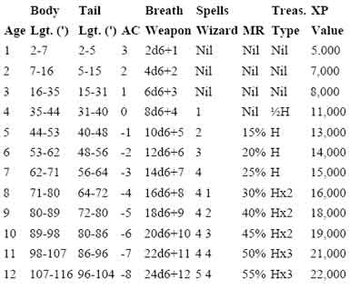
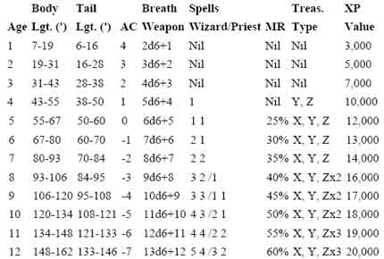
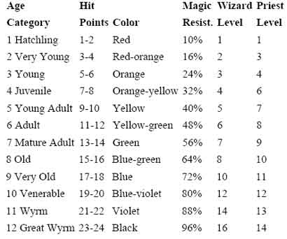
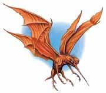

La Grande Foresta Nordica può considerarsi una zona per personaggi di 5°-7° livello.
DETERMINARE SE SI VERIFICA L'INCONTRO (1D10)
Si effettui un tiro per il giorno ed uno per la notte. Qualora si verifichi un incontro od un minore si tiri nuovamente per determinare se nel medesimo arco della giornata siano effettuati ulteriori incontri, il tiro sarà ripetuto fino a che non si verifichi un risultato di "nessun incontro". Si determini, quindi, l'orario in cui i vari incontri si sono verificati.
|
RISULTATO |
GIORNO ORE 6 - 17 (1D12+5) |
NOTTE ORE 18 - 5 (1D12) |
| 1 | INCONTRO MAGGIORE | INCONTRO MAGGIORE |
| 2 | INCONTRO MAGGIORE | INCONTRO MINORE |
| 3 | INCONTRO MINORE | NESSUN INCONTRO |
| 4+ | NESSUN INCONTRO | NESSUN INCONTRO |
DETERMINARE LA DISTANZA DELL'INCONTRO (1D6)
1 Incontro
Molto Ravvicinato ( 1d3+1 * 3 metri )
2 Incontro Ravvicinato ( 1d3 *
9 metri )
3 Incontro a Corta Distanza (
1d3+1 * 9 metri )
4 Incontro a Media Distanza (
2d3 * 9 metri )
5 Incontro a Lunga Distanza ( 2d3+2 *
9 metri )
6 Incontro Lontano ( 3d3+3 *
9 metri )
Se il gruppo è in movimento e incontra creature che potenzialmente possono accamparsi occorre tirare 1d20 con un risultato da 1 a 5 le creature incontrate sono accampate.
DETERMINARE LE MODALITA' DI AVVISTAMENTO (1D12)
1 Il gruppo si
trova in un’imboscata organizzata*
2 Il gruppo viene avvistato per primo
3 Il gruppo viene avvistato per primo
4 Il gruppo viene avvistato
per primo
5 Entrambi i gruppi si avvistano contemporaneamente
6 Entrambi i gruppi si avvistano contemporaneamente
7 Entrambi i gruppi si avvistano contemporaneamente
8 Entrambi i gruppi si
avvistano contemporaneamente
9 Entrambi i gruppi si avvistano contemporaneamente
10 Il gruppo avvista per primo l’incontro
11 Il gruppo avvista per primo l’incontro
12 Il gruppo avvista per primo l’incontro
* Qualora le creature si ritiene non opportuno che le creature incontrate siano in grado di effettuare un'imboscata si rinnovi il tiro di dado. Si noti inoltre che l'imboscata si verifica solo con un tiro di 1 naturale, se il risultato diviene 1 dopo l'applicazione dei modificatori si applichi il risultato previsto al numero 2. In caso di imboscata aggiungere un bonus del 20 % ai punti esperienza previsti dall'incontro.
Modificatori:
A seconda della strategia utilizzata dal gruppo è possibile applicare un
modificatore di + o - 1.
Qualora l'incontro sia composto da almeno 5 creature applicare un modificatore
di +1 al tiro.
Qualora il gruppo sia composto da
almeno 5 personaggi (ivi comprese le cavalcature) applicare un modificatore di
-1 al tiro.
La presenza di creature Huge in uno dei due gruppo implica un modificatore di +
o - 1 a favore dell'altro gruppo.
La presenza di creature Gargantuan in
uno dei due gruppo implica un modificatore di + o - 2 a favore dell'altro
gruppo.
Trovarsi accampati implica un modificatore di + o - 1 a favore dell'altro
gruppo.
Applicare i modificatori previsti a seconda del tipo di creatura incontrata e
della sua strategia di attacco/movimento.
TAVOLA DEGLI INCONTRI MAGGIORI
| RISULTATO | INCONTRO MAGGIORE DURANTE IL GIORNO | INCONTRO MAGGIORE DURANTE LA NOTTE |
| 2 | INCONTRO SPECIALE | INCONTRO SPECIALE |
| 3 | CENTAUR | CENTAUR |
| 4 | 1d12: (1-8) PIANTIFORMI (9-12) FOREST OOZE | 1d12: (1-8) PIANTIFORMI (9-12) FOREST OOZE |
| 5 | OWLBEAR | 1d10: (1-4) OWLBEAR (5-10) ANIMA DELLA FORESTA |
| 6 | 1d12: (1-7) KOBOLD (8-12) GOBLINS | INCONTRO VOLANTE |
| 7 | 1d12: (1-6) OGRE (7-12) GNOLL | 1d12: (1-3) OGRE (4-6) GNOLL (7-12) TROLL |
| 8 | HOBGOBLIN | HOBGOBLIN |
| 9 | INCONTRO VOLANTE | 1d12: (1-7) KOBOLD (8-12) GOBLINS |
| 10 | INCONTRO ANIMALE | INCONTRO ANIMALE |
| 11 | INCONTRO ANIMALE | INCONTRO ANIMALE |
| 12 | INCONTRO ANIMALE | INCONTRO ANIMALE |
| 13 | 1d12: (1-4) BEETLE, (5-8) CENTIPEDE (9-12) SPIDERS | 1d12: (1-4) BEETLE, (5-8) CENTIPEDE (9-12) SPIDERS |
| 14 | ORC | ORC |
| 15 | INCONTRO VOLANTE | INCONTRO VOLANTE |
| 16 | PERSONAGGI NON GIOCANTI | PERSONAGGI NON GIOCANTI |
| 17 | 1d20: INSECT, (1-7) WORKER (8-12)WARRIOR (13-20) FROG | 1d20: INSECT, (1-7) WORKER (8-12)WARRIOR (13-20) FROG |
| 18 | 1d12: (1-8) PIANTIFORMI (9-12) FOREST OOZE | 1d12: (1-8) PIANTIFORMI (9-12) FOREST OOZE |
| 19 | 1d12: (1-5) MANTA FOREST TRAPPER (6-12) BHAERGALA | 1d12: (1-5) MANTA FOREST TRAPPER (6-12) BHAERGALA |
| 20 | INCONTRO SPECIALE | INCONTRO SPECIALE |
TAVOLA DEGLI INCONTRI VOLANTI
| RISULTATO | INCONTRO VOLANTE DURANTE IL GIORNO | INCONTRO VOLANTE DURANTE LA NOTTE |
| 2 | DRAKE, GOLDEN | BAT, SINISTER |
| 3 | ||
| 4 | ||
| 5 | INSECT GIANT, HORNET | |
| 6 | INSECT GIANT, FLY HORSEFLY | |
| 7 | INSECT GIANT, WASP | |
| 8 | 1d12: INSECT GIANT BEE, (1-7) WORKER (8-12) SOLDIER | |
| 9 | INSECT GIANT, FLY BLUEBOTTLE | |
| 10 | BAT | |
| 11 | 1d12: (1-7) UCCELLO PREDA (8-12) ANATRA FORESTE | BAT |
| 12 | BAT | |
| 13 | ||
| 14 | STIRGE | |
| 15 | ||
| 16 | ||
| 17 | ||
| 18 | ||
| 19 | GLOOMWING (MOTH) (1) | |
| 20 |
TAVOLA DEGLI INCONTRI SPECIALI
| RISULTATO | INCONTRO SPECIALE |
| 2 | DRAGON |
| 3 | VERY RARE |
| 4 | GIANT 1d10: 1-6 WOOD (1-2) 7-10 FIRBOLG (1) |
| 5 | DRAGONET - FAERIE DRAGON |
| 6 | UNICORN |
| 7 | WOLFWERE |
| 8 | RARE |
| 9 | ANKHEG (1) |
| 10 | DARK SPRITE |
| 11 | ETTERCAP (1) |
| 12 | TENEBROUS WORM (1) |
| 13 | KIRRE |
| 14 | BASILISK, Lesser (1-2) |
| 15 | WIGHT |
| 16 | ABYSS ANTS |
| 17 | BEARHOUND (1) |
| 18 | PEGASUS |
| 19 | GIANT, FOG (1) 1d10: 1-5 NG, 6-10 NE |
| 20 | VERY RARE |
TAVOLA DEI PERSONAGGI NON GIOCANTI (2d6)
| RISULTATO | INCONTRO DI PERSONAGGI NON GIOCANTI |
| 2 | Invasori dell'Impero Scuro |
| 3 | Artigiani 1-2 bowyer 3-4 taglialegna 5-6 skinner |
| 4 | Umani indipendenti, del Regno di Tarsis |
| 5 | Pattuglia di Guardie Elfiche di Wood Village |
| 6 | Erborista |
| 7 | Avventurieri |
| 8 | Elfi di Wood Village |
| 9 | Cacciatori senza permesso |
| 10 | Banditi |
| 11 | Custode della Foglia D'Oro |
| 12 | Protettore della Foresta |
TAVOLA DEGLI INCONTRI ANIMALI (1d10)
1-5 ANIMALE DI PICCOLA TAGLIA
| RISULTATO (1d100) | INCONTRO ANIMALI NELLA FORESTA |
| 1-8 | VOLPE ROSSA |
| 9-16 | PORCOSPINO |
| 17-24 | GATTO DELLE FORESTE |
| 25-32 | PROCIONE |
| 33-40 | TACCHINO |
| 41-48 | DONNOLA |
| 49-56 | TASSO |
| 57-66 | ANATRA DELLE FORESTE |
| 67-81 | LEPRE |
| 82-96 | UCCELLO DA PREDA |
| 97-100 | ERMELLINO |
6-8 ANIMALE DI GROSSA TAGLIA
| RISULTATO (1d100) | INCONTRO ANIMALI NELLA FORESTA |
| 1-12 | GAUR |
| 13-25 | ALCE |
| 26-38 | CERVO |
| 39-44 | CAVALLO |
| 45-52 | CAT, GREAT |
| 53-64 | BEAR |
| 65-72 | GHIOTTONE |
| 73-88 | CINGHIALE |
| 89-100 | LUPO |
9-10 SERPENTE
TAVOLA DEGLI INCONTRI MINORI
| RISULTATO | INCONTRO MAGGIORE DURANTE IL GIORNO | INCONTRO MAGGIORE DURANTE LA NOTTE |
| 1 | CADAVERE o CARCASSA * | CADAVERE o CARCASSA * |
| 2 | STAGNO NATURALE* | STAGNO NATURALE* |
| 3 | INSIDIA NATURALE o TRAPPOLA* | INSIDIA NATURALE o TRAPPOLA* |
| 4 | PICCOLO RUSCELLO* | PICCOLO RUSCELLO* |
| 5 | POZZA D'ACQUA (1d10: 1-8 Potabile 9-10 Venefica)* | POZZA D'ACQUA (1d10: 1-8 Potabile 9-10 Venefica)* |
| 6 | AMBIENTE PARTICOLARE* | AMBIENTE PARTICOLARE* |
| 7 | INCONTRO ANIMALE | INCONTRO ANIMALE |
| 8 | INCONTRO ANIMALE | INCONTRO ANIMALE |
| 9 | INCONTRO ANIMALE | INCONTRO ANIMALE |
| 10 | INCONTRO ANIMALE | INCONTRO ANIMALE |
| 11 | INCONTRO ANIMALE | INCONTRO ANIMALE |
| 12 | INCONTRO ANIMALE | INCONTRO ANIMALE |
*
Se il gruppo non è in movimento considerare tutti i risultati marcati con
l'asterisco come
INCONTRO ANIMALE
CADAVERE o CARCASSA
Verificare l'appartenenza tirando nella
Tavola degli Incontri Maggiori. La carcassa emana un odore pungente di cadavere
che i personaggi possono avvertire da discreta distanza 3d10*10 metri. La presenza della carcassa può attirare
animali o bestie feroci, quando i personaggi si avvicinano alla carcassa tirare
nuovamente 1d10 con risultato di 1-2 qualcuno sarà stato attirato dalla
carcassa, tirare quindi nella Tavola degli Incontri Maggiori (ripetere il tiro
se il risultato non considerabile una bestia attirata dalla carcassa). Se i
personaggi restano nei pressi della carcassa oltre ai normali tiri per gli
incontri ripetere il tiro suddetto una volta per il giorno ed una volta per la
notte. Si tiri 1d20 con un risultato da 1 a 12 la carcassa non è stata ripulita
dagli oggetti eventualmente trasportati.
INSIDIA NATURALE o TRAPPOLA (tirare 1d12)
Il gruppo incontra un'insidia naturale od una trappola. Può trattarsi di un pericolo dovuto alla natura selvaggia oppure di una trappola posizionata dalle creature della foresta o da cacciatori. Fra le insidie possibili nella foresta vi sono:
(1-3)
PERCORSO
SCOSCESO FRANOSO
Mentre i personaggi camminano nella foresta
iniziano a percorrere un percorso scosceso. Durante la discesa/salita parte del
terreno cede. Ogni personaggio e/o creatura deve tirare 1d6 con 1-3 sarà stato
coinvolto dalla frana e dovrà effettuare un tiro salvezza contro paralisi
(modificato dalla destrezza) per evitare di cadere per 3d6 metri a valle
provocandosi 1 punto danno per metro di caduta.
(4-6)
FOSSA NASCOSTA
Mentre i personaggi camminano nella foresta
calpestano una zona di terreno che in realtà nasconde una fossa nascosta
naturale coperta. Ogni personaggio e/o creatura deve tirare 1d6 con 1-3 sarà
coinvolto dalla fossa e dovrà effettuare un tiro salvezza contro paralisi
(modificato dalla destrezza) per evitare di caderci dentro. I personaggi che
possiedono la competenza observation possono provare ad
utilizzarla, qualora superano la prova riceveranno un bonus di +3 (+15%) al tiro
salvezza. I personaggi caduti subiranno danni a seconda della profondità del
fosso. Per determinare la tipologia del fosso effettuare i seguenti tiri:
2d10+2 metri di profondità (1d6 danno da botta ogni 3 metri)
1-2 su 1d10: Presenza di rocce taglienti alla fine del fosso (+1d8 danni da
taglio)
1-4 su 1d10: Presenza di fogliame morbido sul fondo (i danni da botta sono
provocati ogni 4 metri di caduta)
1-3 su 1d10: Presenza di rovi spinosi sul
fondo (+1d2 danni da taglio, inoltre il personaggio risulta invischiato nei
rovi. Ogni round può provare a liberarsi con un'azione che dura un intero round
superando un tiro salvezza contro paralisi, per ogni tiro salvezza fallito
subisce ulteriori 1d2 danni da taglio).
(7-8)
VESPAIO OD ALVEARE
Mentre i personaggi camminano nella foresta
si imbattono in un alveare (o vespaio) di insetti molto aggressivi. Uno dei
personaggi selezionato a caso sarà a contatto con l'alveare. Dall'alveare
fuoriuscirà uno sciame aggressivo. Per determinare la grandezza dello sciame
tirare 1d3, lo stesso potrà occupare da 1 a 3 sfere di 3 metri di diametro
(esagoni). Ogni sfera dello sciame può muoversi separatamente ed aggredire una
creatura muovendosi volando ad un fattore movimento pari a 18. Lo sciame non
subisce penalità per il territorio e aggredisce una creatura quando occupa la
medesima casella occupata dalla stessa. Ogni round di combattimento, appena lo
sciame raggiunge la vittima, la stessa subirà automaticamente 1d3+1 danni
(l'attacco non può provocare effetti critici e si considera effettuato al
fattore movimento dello sciame che si muove come se fosse una creatura di taglia
media) inoltre la stessa dovrà superare un tiro salvezza contro veleno o subire
i seguenti effetti: Veleno: Tipo
Insinuativo, Onset 1 round,
Effetto 0/Incapacitato per 24 ore, Delay
None, Mod. TS 0,
Ass. 24 ore.
Ogni sfera di sciame si considera avere 10 punti ferita e può essere danneggiata
solo attraverso attacchi ad area nella posizione occupata, lo sciame effettua
tiri salvezza come se fosse una creatura di 3 dadi vita. Effetti ad area non di
energia (si pensi a magie quali Tarsis Rain of Stone) provocheranno solo
1/3 dei danni (1/6 se il tiro salvezza riesce).
Lo sciame inseguirà le sue vittime fino a che le stesse si troveranno entro 21
metri dall'alveare e per 1d3 rounds successivi al loro allontanamento (per far
poi ritorno all'alveare). Lo sciame non inseguirà le vittime sotto la superficie
dell'acqua.
Ogni sfera di sciame eliminata potrà valutarsi 125 punti esperienza. Eliminato
lo sciame nell'alveare potranno rivenirsi 1d10 libbre di miele di alta qualità
dal valore di 15 corone l'una.
(9-10)
TAGLIOLA
Mentre i personaggi camminano nella foresta
uno di questi (sorteggiato a caso) rischia di finire in una tagliola per
animali. Per evitarla dovranno superare un tiro salvezza contro pietrificazione. I personaggi che possiedono la competenza observation possono
provare ad utilizzarla, qualora superano la prova nella competenza costoro
riceveranno un bonus di +3 (+15%) al tiro salvezza. Se il tiro salvezza fallisce
il personaggio sarà colpito dalla tagliola che provocherà 1d3 danni da taglio
(se il tiro salvezza è fallito criticamente il personaggio dovrà anche tirarsi
un critico da taglio ad una gamba). Vi è 1 possibilità su 10 che la tagliola sia
sporca od arrugginita, se ciò avviene il personaggio deve superare un tiro
salvezza contro malattia od ammalarsi di una delle malattie dei combattenti. Per
liberarsi dalla tagliola il personaggio deve aprirla superando una prova di
forza con penalità di -2. Per ogni tentativo subisce un punto fatica e se
fallisce si provoca 1 danno ulteriore da taglio. Al massimo una seconda creatura
può provare ad aiutare ad aprire la tagliola addizionando la sua forza a quella
del personaggio (sempre con penalità di -2). In questo caso si effettuerà un
solo tiro ma entrambi accumuleranno 1 punto fatica e se la prova fallisce il
bloccato dalla tagliola si provocherà 1 danno ulteriore da taglio. Una volta
aperta la tagliola resta pronta a scattare nuovamente. La tagliola ha un peso
pari a 10 libbre ed una catena con la quale si inchioda o aggancia alla
vegetazione o ad un altro supporto. Ogni volta che scatta vi è 1 possibilità su
20 che la tagliola si rompa definitivamente.
(11-12) CORDA
SOSPESA
Mentre i personaggi camminano nella foresta
uno degli stessi selezionato a caso finisce in una corda sospesa. Per evitare la
corda occorre effettuare un tiro salvezza contro pietrificazione. Se il tiro
salvezza riesce il personaggio evita la corda, altrimenti sarà intrappolato e
sollevato 1d2*3 metri. Per liberarsi il personaggio può provare a tagliare la
corda colpendo AC 6 ed effettuando con un unico colpo almeno 4 danni da taglio.
Il personaggio appeso ha una penalità al tiro per colpire di -3 (-1 se riesce in
una prova della competenza tumbling). La corda può essere slegata da terra da
eventuali compagni del personaggio. Tagliata la corda il personaggio cadrà
immediatamente al suolo. In 2d20 ore giungeranno sul posto coloro che hanno
posizionato la corda.
AMBIENTE PARTICOLARE (tirare 1d8)
1 AMMASSO
ROCCIOSO
2
VEGETAZIONE ESTREMAMENTE FITTA
3
VEGETAZIONE SPINOSA
4
PICCOLA CAVERNA NATURALE
5
GROSSA CAVERNA NATURALE
6
GRUPPO DI CAVERNE NATURALI
7 CAMPO
ABBANDONATO
8 CAPANNO DI CACCIA
ABYSS ANTS
(3d3+1)
Diet: Carnivoro
Intelligence: Low (6) [6 punti combattimento]
Alignment: Neutral Evil
Armor Class: 3
Movement: 18
Hit Dice: 3
THAC0: 17
No. of Attacks: 1 morso + 1 pungiglione
Damage/Attack: 1d6 (taglio) + 1d6+2 (punta/acido)
Special Attacks: Getto d'Acido
Special Defenses: Resistenza all'acido
Magic Resistance: None
Size: Small - 70 cm. lungo;
Morale: Fearless (19)
XP Value: 175
Le
formiche abissali sono in tutto e per tutto simili alle formiche giganti con
l'unica differenza di avere dimensioni leggermente minori ed un colore del
carapace addominale rosa putrido. Si tratta di creature intelligenti che non
parlano ma sono dotate di una primitiva forma di telepatia che le rende in grado
di comunicare tra loro fino a 200 metri di distanza. Le formiche abissali
attaccano mordendo e pungendo il loro avversario (possono effettuare i due
attacchi esclusivamente sulla medesima creatura). Fino a tre volte al giorno
sono in grado di spruzzare un getto di acido entro 9 metri di distanza che
colpisce i propri avversari. La vittima deve superare un tiro salvezza contro
pietrificazione modificato dal reaction adj. della destrezza per evitarlo oppure
subire 2d4 danni da acido. Queste formiche
utilizzano una particolare tattica di combattimento selezionando un bersaglio
alla volta e provando ad attaccarlo tutte assieme per passare su un ulteriore
avversario solo dopo che il primo è stato abbattuto. Le formiche abissali sono
particolarmente resistenti all'acido subendo la metà dei danni da parte dello
stesso (1/4 con tiro salvezza effettuato con successo) ed assorbendo in ogni
caso i primi 3 danni da acido che avrebbero dovuto subire (dopo la divisione).
Mystical Resource Sourge
(Antenna) Quantità:
1, Presenza 25% - Scuola di Magia:
Charm
- Qualità della Risorsa: Common.
Mystical Resource Sourge
(Carapace) Quantità: 1, Presenza 25% - Effetto Particolare:
Resistenza all'Acido
- Qualità della Risorsa:
Common.
Mystical Resource Sourge
(Ghiandola Acida) Quantità: 1, Presenza 25% - Effetto Particolare:
Acido
- Qualità della Risorsa:
Common.
ANKHEG
Si tiri un 1d10: da 1 ad 8 è nascosto sotto la terra in
attesa della vittima (ignorare la distanza dell'incontro e la modalità di
avvistamento) in quanto si considera che uno dei personaggi cammini sopra il
mostro.
Diet: Omnivore,
Intelligence: Non- (0)
Alignment: Neutral,
Armor Class: Overall 2, Underside 4
Movement: 12, Br 6
Hit Dice (1d10):
1-2) 3 DV,
3-4) 4 DV
5-6) 5 DV
7-8) 6 DV
9) 7 DV
10) 8 DV
THAC0: 17 (3 DV); 16 (4 DV); 15 (5 DV); 14 (6 DV); 13 (7 DV); 12 (8 DV).
No. of Attacks: 1
Damage/Attack se Large: 2-12 (crush)+1-4 (acid)
Damage/Attack se Huge: 3-18 (crush)+1-6 (acid)
Special Attacks: Squirt acid
Special Defenses: Nil
Magic Resistance: Nil
Size Large: L - 2,50 m. lungo (3 DV); L - 3 m. lungo (4 DV); L - 4 m.
lungo (5 DV);
Size Huge: H - 5 m. lungo (6 DV); H - 6 m. lungo (7 DV); H - 7 m. lungo (8 DV).
Morale: Average (9)
XP Value (dimensione inclusa): 150 (3 DV); 210 (4 DV); 330 (5 DV); 550 (6 DV);
820 (7 DV); 1300 (8 DV).
The
ankheg is a burrowing monster usually found in forests or choice agricultural
land. Because of its fondness for fresh meat, the ankheg is a threat to any
creature unfortunate enough to encounter it. The ankheg resembles an enormous
many-legged worm. Its six legs end in sharp hooks suitable for burrowing and
grasping, and its powerful mandibles are capable of snapping a small tree in
half with a single bite. A tough chitinous shell, usually brown or yellow,
covers its entire body except for its soft pink belly. The ankheg has glistening
black eyes, a small mouth lined with tiny rows of chitinous teeth, and two
sensitive antennae that can detect movement of man-sized creatures up to 300
feet away.
Combat: The ankheg's preferred attack method is to lie 5 to 10 feet below
the surface of the ground until its antennae detect the approach of a victim. It
then burrows up beneath the victim and attempts to grab him in its mandibles,
crushing and grinding for 2d6 or 3d6 points of damage per round while secreting
acidic digestive enzymes to cause an additional 1d4 or 1d6 points of damage per
round until the victim is dissolved. The ankheg can squirt a stream of acidic
enzymes once every six hours to a distance of 30 feet. However, since it
is unable to digest food for six hours after it squirts enzymes, it uses this
attack technique only when desperate. A victim struck by the stream of acidic
enzymes suffers 6d4 points of damage if large / 9d4 if huge (half damage if the
victim rolls a successful saving throw vs. paralisis mod. by dexterity).
Habitat/Society: The ankheg uses its mandibles to continuously dig
winding tunnels 30-40 feet deep in the rich soil of forests or farmlands. The
hollowed end of a tunnel serves as a temporary lair for sleeping, eating, or
hibernating. When an ankheg exhausts the food supply in a particular forest or
field, it moves on to another. Autumn is mating season for ankhegs. After the
male fertilizes the female, the female kills him and deposits 2d6 fertilized
eggs in his body. Within a few weeks, about 75% of the eggs hatch and begin
feeding. In a year, the young ankhegs resemble adults and can function
independently. Young ankhegs have 2 Hit Dice and an AC 2 overall and an AC 4 for
their undersides; they bite for 1d4 points of damage (with an additional 1d4
points of damage from enzyme secretions), and spit for 4d4 points of damage to a
distance of 30 feet. In every year thereafter, the ankheg functions with full
adult capabilities and gains an additional Hit Die until it reaches 8 Hit Dice.
Beginning in its second year of life, the ankheg sheds its chitinous shell just
before the onset of winter. It takes the ankheg two days to shed its old shell
and two weeks to grow a new one. During this time, the sluggish ankheg is
exceptionally vulnerable. Its overall AC is reduced to 5 and its underside AC is
reduced to 7. Additionally, it moves at only half its normal speed, its mandible
attack inflicts only 1d10 points of damage, and it is unable to squirt acidic
enzymes. While growing a new shell, it protects itself by hiding in a deep
tunnel and secreting a repulsive fluid that smells like rotten fruit. Though the
aroma discourages most creatures, it can also pinpoint the ankheg's location for
human hunters and desperately hungry predators. Ankhegs living in cold climates
hibernate during the winter. Within a month after the first snowfall, the ankheg
fashions a lair deep within the warm earth where it remains dormant until spring.
The hibernating ankheg requires no food, subsisting instead on nutrients stored
in its shell. The ankheg does not secrete aromatic fluid during this time and is
thus relatively safe from detection. Though the ankheg's metabolism is reduced,
its antennae remain functional, able to alert it to the approach of an intruder.
A disturbed ankheg fully awakens in 1d4 rounds, after which time it can attack
and move normally. The ankheg does not hoard treasure. Items that were not
dissolved by the acidic enzymes fall where they drop from the ankheg's mandibles
and can be found scattered throughout its tunnel system.
Ecology: Though a hungry ankheg can be fatal to a farmer, it can be quite
beneficial to the farmland. Its tunnel system laces the soil with passages for
air and water, while the ankheg's waste products add rich nutrients. The ankheg
will eat decayed organic matter in the earth, but it prefers fresh meat. All but
the fiercest predators avoid ankhegs. Dried and cured ankheg shells can be made
into armor with an AC of 2, and its digestive enzymes can be used as regular
acid.
[3-5 DV]
Mystical Resource Sourge
(Ghiandola Acida) Quantità: 1, Presenza 50% - Effetto Particolare:
Acido
- Qualità della Risorsa:
Common.
[6-8 DV]
Mystical Resource Sourge
(Ghiandola Acida) Quantità: 1, Presenza 50% - Effetto Particolare:
Acido
- Qualità della Risorsa:
Uncommon.
BASILISK
Lesser
Diet: Carnivora
Intelligence: Animal (1)
Alignment: Neutral
Armor Class: 4
Movement: 6
Hit Dice: 6+1
THAC0: 15
No. of Attacks: 1
Damage/Attack: 1d10 (morso)
Special Attacks: Gaze turn to stone
Special Defenses: Nil
Magic Resistance: Nil
Size: Medium - 2,5 m.
lungo;
Morale: Steady (12)
XP Value: 1400
These
reptilian monsters all posses a gaze that enables them to turn any fleshy
creature to stone; their gaze extends into the Astral and Ethereal planes.
Although it has eight legs, its sluggish metabolism allows only a slow movement
rate. A basilisk is usually dull brown in color, with a yellowish underbelly.
Its eyes glow pale green.
Combat: While it has strong, toothy jaws, the basilisk's major weapon is its
gaze. However, if its gaze is reflected, and it sees its own eyes, it will
become petrified itself, but this requires light at least equal to bright
torchlight and a good, smooth reflector. In the Astral plane its gaze kills; in
the Ethereal plane it turns victims into ethereal stone. These will only be seen
by those in the Ethereal plane or who can see ethereal objects.
Utilizzo dello Sguardo: Ogni round di combattimento, oltre al normale
attacco, il basilisco può fissare una qualsiasi creatura si trovi entro 30 metri
dallo stesso con il suo sguardo mortale. La vittima, dunque, deve superare un
tiro salvezza contro pietrificazione o trasformarsi in una statua di pietra. Se
un avversario decide di cercare di evitare lo sguardo (ad es. guardando
in basso) ma continua a combattere tenendo gli occhi aperti riceve una penalità
di -2 al tiro per colpire contro il basilisco ed una penalità di -2 alla proprio
classe armatura, inoltre, qualora il basilisco fissi lo sguardo su di lui costui
avrà comunque una possibilità pari al 33% di incontrare per caso lo sguardo del
basilisco. Se un avversario dichiara di cercare di tenere gli occhi del tutto
chiusi (senza bendarsi) ma continua a combattere avrà le penalità di chi è
accecato ma ogni round dovrà superare una prova di saggezza per non aprire
involontariamente gli occhi per una frazione di round, se ciò avviene, qualora
il basilisco stia fissando lo sguardo su di lui costui avrà comunque una
possibilità pari al 25% di incontrare per caso lo sguardo mortale del basilisco.
Mystical Resource Sourge
(Cuore) Quantità: 1, Presenza
50% - Scuola di Magia :
Enchantment,- Qualità della Risorsa:
Rare.
BAT
Si tiri 1d20 per determinare il tipo di pipistrello
incontrato:
1-12 BAT, Common; 13-17
BAT, Large; 18-20
BAT, Hunter
BAT, Common (Numero:
2d20+2)
Se sono incontrati almeno 10 pipistrelli comuni si tiri
1d10: da 1 ad 5 si tratta di un nido che presenta un tappeto di guano. Il guano
oltre ad emanare una forte puzza (si avverte a 50 metri di distanza) sprigiona
un gas molto fastidioso. Tutti i personaggi che si avvicinano entro 9 metri dal
tappeto di guano devono superare un tiro salvezza contro raggio della morte
modificato dalla costituzione (mod. punti ferita) od essere incapacitati
fino a che rimangono entro 9 metri di distanza dal tappeto di guano.
Si tiri, inoltre, 1d10 con un risultato di 1-2 il tappeto di guano rappresenta
la dimora di alcune creature determinate con un tiro di 1d10: 1-7 Carrion
Crawlers; 8-10 Rot
Grub.
Diet: Onnivoro
Intelligence: Animal (1)
Alignment: Neutral
Armor Class: 4 volando (8 naturale)
Movement: 1, Fl 24 (B)
Hit Dice: 1/4 (1d2 pf)
THAC0: 20
No. of Attacks: 1
Damage/Attack: 1 (morso)
Special Attacks: Nil
Special Defenses: Nil
Magic Resistance: Nil
Size: Tiny - 30 cm.
lungo;
Morale: Unreliable (4)
XP Value: 15
Combat: I pipistrelli combattono volando in modo confuso addosso la
vittima per questo motivo se almeno tre pipistrelli si trovano in corpo a corpo
con il medesimo avversario costui sarà confuso ricevendo ogni round il 20% di
fallire nel lancio delle magie, una penalità di -2 ai tiri per colpire, il 1
possibilità su 1d10 che si spenga o rompa la torcia che impugna.
BAT, Large (Numero:
3d3)
Diet: Onnivoro
Intelligence: Animal (1)
Alignment: Neutral
Armor Class: 8 (5 contro avversari che hanno meno di 14 in destrezza e li
attaccano a distanza)
Movement: 3, Fl 18 (C)
Hit Dice: 1
THAC0: 19
No. of Attacks: 1
Damage/Attack: 1d4 (morso)
Special Attacks: Malattia
Special Defenses: Nil
Magic Resistance: Nil
Size: Medium - 1,50 m.
lungo;
Morale: Unsteady (7)
XP Value: 35
Combat: Chi è colpito da questi pipistrelli, alla fine del combattimento,
riceve una possibilità pari all'1% per punto danno subito di contrarre una
malattia (dovranno poi effettuare il tiro salvezza). Si tiri quindi nella
tabella delle malattie infettive per determinare la malattia contratta.
BAT, Hunter (Numero:
1d6+1)
Diet: Carnivoro
Intelligence: Average to High (8 - 13, 1d6+7)
Alignment: Neutral Evil
Armor Class: 6
Movement: 2, Fl 18 (A)
Hit Dice: 2+2
THAC0: 18 con il primo attacco / 19 quando effettuano 4 attacchi
No. of Attacks: 1 coda a punta / 1 morso + 2 artigli + 1 frustata della coda
Damage/Attack: 3d4 danni da punta / 1d4 + 1d2*2 + 1d6
Special Attacks: Nil
Special Defenses: Nil
Magic Resistance: Nil
Size: Medium - 2 m.
lungo;
Morale: Steady (11)
XP Value: 175
They have infravision to a distance of 120 feet, but rarely surprise opponents, since they emit echoing, loon-like screams when excited. Night hunter lairs usually contain over 30 creatures. They typically live in double-ended caves, or above ground in tall, dense woods. Night hunters do not tarry to eat where they feel endangered, so their lairs often contain treasure fallen from prey carried there. Night hunters roost head-down when sleeping. They are velvet in hue, even to their claws, and have violet, orange, or red eyes.
Modalità di combattimento: Il primo round quando si avvicinano attaccano con la loro coda a punta triangolare che provoca 3d4 danni da punta. Successivamente, attaccano con il morso (1d4), due artigli (1d2) ed un colpo di frusta con la coda (1d6) che sono tutti danni da taglio.
BAT,
SINISTER (Numero: 1d3)
Diet: Onnivoro
Intelligence: Average to Eceptional (8 - 15, 1d8+7)
Alignment: Lawful Evil
Armor Class: 3
Movement: 2, Fl 21 (A)
Hit Dice: 4+4
THAC0: 16
No. of Attacks: 1 morso
Damage/Attack: 1d4+1 danni
Special Attacks: Magic Use
Special Defenses: Energy Field
Magic Resistance: 70%
Size: Large - 3 m.
apertura alare;
Morale: Champion (16)
XP Value (comprensivo bonus large): 2200
These mysterious jet-black creatures most closely resemble manta rays. They have no distinct heads and necks, and their powerfully-muscled wings do not show the prominent finger bones common to most bats. A natural ability of levitation allows them to hang motionless in midair. This unnerving appearance and behavior has earned them their dark name, but sinisters are not evil. Above ground, they prefer to hunt at night, when their infravision (50 m. di raggio) is most effective. They eat carrion if no other food is available, and regularly devour flowers and seed pods of all sorts. Sinisters are both resistant to magic and adept in its use. In addition to their pinpoint, precision levitation, they are surrounded at all times by a naturally-generated 5-foot-deep energy field akin to a wall of force. This field affords no protection against spells or melee attacks, but missile attacks are stopped utterly; normal missiles are turned away, and such effects as magic missile and Melf's acid arrow are absorbed harmlessly. In addition, all sinisters can cast one hold monster (as the spell) once per day. They usually save this for escaping from creatures more powerful than themselves, but may use it when hunting, if ravenous. Curiously, though they are always silent (communicating only with others of its kind via 20-foot-range limited telepathy), sinisters love music-both vocal and instrumental. Many a bard making music at a wilderness campfire has found him or herself surrounded by a silent circle of floating sinisters. Unless they are directly attacked, the sinisters will not molest the bard in any way, but may follow the source of the music, gathering night after night to form a rather daunting audience. Sinisters are usually encountered in small groups and are thought to have a long life span. Their social habits and mating rituals are unknown.
Mystical Resource Sourge
(Cuore) Quantità: 1, Presenza
50% - Scuola di Magia:
Abjuration,- Qualità della Risorsa:
Uncommon.
Mystical Resource Sourge
(Cervello) Quantità: 1, Presenza
33% - Scuola di Magia:
Charm,- Qualità della Risorsa:
Uncommon.
BEAR
Si tiri 1d20 per determinare il tipo di orso incontrato:
1-13 BEAR, Black; 14-19
BEAR, Brown; 20 BEAR,
Cave
BEAR, Black
(Numero: 1d2)
Diet: Onnivoro
Intelligence: Semi-Int. (2 - 4)
Alignment: Neutral
Armor Class: 7
Movement: 12
Hit Dice: 3+3
THAC0: 17
No. of Attacks: 1 morso + 2 artigli
Damage/Attack: 1d6 + 1d3*2
Special Attacks: Hug (se colpisce con uno degli artigli con un 18+ naturale
provoca anche 2d4 danni da stritolamento)
Special Defenses: Nil
Magic Resistance: Nil
Size: Medium - 2 m. alto;
Morale: Average (8-10)
XP Value: 175
BEAR, Brown
(Numero: 1)
Diet: Carnivoro
Intelligence: Semi-Int. (2 - 4)
Alignment: Neutral
Armor Class: 6
Movement: 12
Hit Dice: 5+5
THAC0: 15
No. of Attacks: 1 morso + 2 artigli
Damage/Attack: 1d8 + 1d6*2
Special Attacks: Hug (se colpisce con uno degli artigli con un 18+ naturale
provoca anche 2d6 danni da stritolamento)
Special Defenses: Quando raggiungono 0 pf continuano a combattere per altri 1d4
rounds o fino a che raggiungono -10 pf.
Magic Resistance: Nil
Size: Large - 3 m. alto;
Morale: Average (8-10)
XP Value (comprensivo del bonus large): 462
Mystical Resource Sourge (Cuore) Quantità: 1, Presenza 33% - Scuola di Magia: Alteration - Qualità della Risorsa: Common.
BEAR, Cave
(Numero: 1)
Diet: Carnivoro
Intelligence: Semi-Int. (2 - 4)
Alignment: Neutral
Armor Class: 6
Movement: 12
Hit Dice: 6+6
THAC0: 13
No. of Attacks: 1 morso + 2 artigli
Damage/Attack: 1d12 + 1d8*2
Special Attacks: Hug (se colpisce con uno degli artigli con un 18+ naturale
provoca anche 2d8 danni da stritolamento)
Special Defenses: Quando raggiungono 0 pf continuano a combattere per altri 1d4
rounds o fino a che raggiungono -10 pf.
Magic Resistance: Nil
Size: Huge - 4 m. alto;
Morale: Average (8-10)
XP Value (comprensivo del bonus huge): 780
Mystical Resource Sourge (Cuore) Quantità: 1, Presenza 50% - Scuola di Magia: Alteration - Qualità della Risorsa: Common.
BEETLE
Si tiri 1d20 per determinare il tipo di scarafaggio
gigante incontrato.
GIORNO: 1-15 BEETLE, Bombardier; 16-20
BEETLE, Stag;
NOTTE: 1-5
BEETLE, Boring; 6-15
BEETLE, Fire; 16-20
BEETLE, Stag;
BEETLE, Bombardier (Numero: 1d6+2)
The bombardier beetle is usually found above ground in wooded areas. It primarily feeds on offal and carrion, gathering huge heaps of the stuff in which to lay its eggs. Combat: If it is attacked or disturbed, there is a 50% chance each round that it will turn its rear toward its attacker and fire off an 8-foot, spherical cloud of reeking, reddish, acidic vapor from its abdomen. This cloud causes 3d4 points of damage per round to any creature within range. Furthermore, the sound caused by the release of the vapor has a 20% chance of stunning any creature with a sense of hearing within a 15-foot radius, and a like chance for deafening any creature that was not stunned. Stunning lasts for 2d4 rounds, plus an additional 2d4 rounds of deafness afterwards. Deafening lasts 2d6 rounds. The giant bombardier can fire its vapor cloud every third round, but no more than twice in eight hours. Ecology: The bombardier action of this beetle is caused by the explosive mixture of two substances that are produced internally and combined in a third organ. If a bombardier is killed before it has the opportunity to fire off both blasts, it is possible to cut the creature open and retrieve the chemicals. These chemicals can then be combined to produce a small explosive, or fire a projectile, with the proper equipment. The chemicals are also of value to alchemists, who can use them in various preparations. They are worth 50 gp per dose.
BEETLE, Boring (Numero: 1d6)
Boring beetles feed on rotting wood and similar organic material, so they are usually found individually inside huge trees or massed in underground tunnel complexes. Combat: The large mandibles of the boring beetle have a powerful bite and will inflict up to 20 points on damage to the victim. Habitat/Society: Individually, these creatures are not much more intelligent than other giant beetles, but it is rumored that nests of them can develop a communal intelligence with a level of consciousness and reasoning that approximates the human brain. This does not mean that each beetle has the intelligence of a human, but rather that, collectively, the entire nest has attained that level. In these cases, the beetles are likely to collect treasure and magical items from their victims. Ecology: In tunnel complexes, boring beetles grow molds, slimes, and fungi for food, beginning their cultures on various forms of decaying vegetable and animal matter and wastes. One frequent fungi grown is the shrieker, which serves a dual role. Not only is the shrieker a tasty treat for the boring beetle, but it also functions as an alarm when visitors have entered the fungi farm. Boring beetles are quick to react to these alarms, dispatching the invaders, sometimes eating them, but in any case gaining fresh organic matter on which to raise shrieker and other saprophytic plants.
BEETLE, Fire (LINK)
BEETLE, Stag (Numero: 1d3)
These woodland beetles are very fond of grains and similar growing crops, and they sometimes become great nuisances when they raid cultivated lands. Combat: Like other beetles, they have poor sight and hearing, but they will fight if attacked or attack if they encounter organic material they consider food. The giant stag beetle's two horns are usually not less than 8 feet long; they inflict up to 10 points of damage each. Ecology: The worst damage from a stag beetle raid is that done to crops; they will strip an entire farm in short order. Livestock suffers too, stampeding in fear and wreaking more havoc. The beetles may even devour livestock, if they are hungry enough.
BHAERGALA
(Numero: 1)

Diet: Carnivoro
Intelligence: Average (8) [Punti Combattimento 9]
Alignment: Neutral
Armor Class: 5
Movement: 15
Hit Dice: 5+5
THAC0: 15
No. of Attacks: 1 morso + 2 artigli
Damage/Attack: 1d8 + 1d6*2
Special Attacks: Pounce
Special Defenses: Poison Resistance, Evasive Fighting
Magic Resistance: 25%
Size: Large - 3 m. lungo;
Morale: Elite (14)
XP Value: 500
Il Bhaergala è una creatura magica che vive nelle foreste. E' molto temuto dai viaggiatori in quanto, sfruttando la sua intelligenza superiore, questa creatura attacca umani, semi-umani ed umanoidi per cibarsi delle loro carni. Apparentemente questa creatura sembra l'unione ingrandita di un lupo ed un leone e l'odore della sua pelle ricorda l'odore del pane al forno. Il Bhaergala parla sempre la lingua utilizzata dalla civiltà più vicina alla foresta in cui dimora ed utilizza questa sua capacità per confondere ed attrarre i propri nemici.
Il Bhaergala è in grado di effettuare incredibili
balzi. Se, infatti, questa creatura si muove per almeno 6 metri in una stessa
direzione è in grado di effettuare un balzo di 9 metri nella medesima direzione.
Il balzo sarà contato solo come un movimento di 3 metri ai fini di determinare
il movimento della creatura. Il Bhaergala può effettuare un solo balzo al round
ed, in ogni caso, non può effettuare tale salto se il proprio movimento è in
qualsiasi modo impedito o rallentato. Se il Bhaergala effettua questo salto
all'interno del mezzo movimento ed atterra in corpo a corpo con una creatura lo
stesso potrà effettuare i suoi attacchi sulla stessa ottenendo un bonus di +1 al
tiro per colpire e di +2 ai danni (considerato un bonus dovuto alla forza del
mostro). Se la vittima è colpita da almeno due dei tre attacchi, inoltre, la
stessa dovrà superare un tiro salvezza contro pietrificazione (senza
l'applicazione di alcun modificatore) per non cadere a terra
knockdown.
Il Bhaergala combatte in maniera molto agile ed è in grado di muoversi cercando
di evitare attacchi di opportunità. Si consideri che lo stesso sia dotato della
competenza
Evasive Fighting che potrà utilizzare
con successo effettuando un tiro pari od inferiore a 14.
Il Bhaergala è particolarmente resistente ai veleni ed ottiene un bonus di +4 a tutti i tiri salvezza contro veleno.
Mystical Resource Sourge
(Sangue) Quantità: 1, Presenza 50% - Effetto Particolare:
Resistenza al Veleno
- Qualità della Risorsa:
Common.
Mystical Resource Sourge
(Cuore) Quantità: 1, Presenza 50% - Scuola di Magia : Enchantment
- Qualità della Risorsa: Uncommon.
CAT,
GREAT
Si tiri 1d20 per determinare il tipo di grande felino
incontrato:
1-13 Leopard; 14-18
Wild Tiger; 19-20 Giant Lynx;
Leopard
(Numero: tirare 1d10: da 1 a 7 = 1 leopardo; da 8 a 10 = 2 leopardi)
Per determinare il tipo di Leopardo incontrato nella
Grande Foresta Nordica tirare 1d20:
1-15 Leopardo della Foresta Nordica
(manto di una sola tinta color marrone chiaro).
16-20 Leopardo dalle Macchie Nere
(manto bianco a macchie nere). E' particolarmente feroce: Morale sempre 10, +1
Thac0 e Danni (+30 xp).
Diet: Carnivoro
Intelligence: Semi-Int. (2 - 4)
Alignment: Neutral
Armor Class: 6
Movement: 15
Hit Dice: 3+2
THAC0: 17
No. of Attacks: 1 morso + 2 artigli
Damage/Attack: 1d6 + 1d3*2
Special Attacks: Rear Claws: ogni volta che colpisce con entrambi
gli artigli attacca anche con i due artigli posteriori 1d4/1d4.
Special Defenses: Sorpreso solo con 1 naturale
Magic Resistance: Nil
Size: Medium - 1,75 m. lungo;
Morale: Average (8-10)
XP Value: 270
I leopardi hanno sensi molto sviluppati ed ottengono un
modificatore di -1 il tiro sulla modalità di avvistamento. Inoltre tirare 1d10:
da 1 a 5 il leopardo è già appostato, -2 ulteriore al tiro sulla modalità di
avvistamento.
Se il leopardo non è già appostato e vede prima il nemico si apposta su un
albero (si muove senza farsi notare al 70%). Il leopardo appostato salta
sull'avversario imponendo un tiro sulla sorpresa a penalità di -3. I leopardi
possono saltare fino ad 8 metri in avanti ed a 6 metri in alto.
Wild Tiger
(Numero: tirare 1d10: da 1 a 7 = 1 tigre
selvatica; da 8 a 10 = 1d2+1 tigri selvatiche)
Diet: Carnivoro
Intelligence: Semi-Int. (2 - 4)
Alignment: Neutral
Armor Class: 6
Movement: 12
Hit Dice: 5+5
THAC0: 15
No. of Attacks: 1 morso + 2 artigli
Damage/Attack: 1d10 + 1d4+1*2
Special Attacks: Rear Claws: ogni volta che colpisce con entrambi
gli artigli attacca anche con i due artigli posteriori 2d4/2d4.
Special Defenses: Sorpreso solo con 1 naturale
Magic Resistance: Nil
Size: Large - 2,50 m. lungo;
Morale: Average (8-10)
XP Value (comprensivo del bonus large): 715
Le tigri selvatiche hanno sensi molto sviluppati ed ottengono un modificatore di -1 il tiro sulla modalità di avvistamento. Inoltre tirare 1d10: da 1 a 4 la tigre è già appostata, -2 ulteriore al tiro sulla modalità di avvistamento.
Se la tigre non è già appostata e vede prima il nemico si apposta su un albero o dietro le frasche (si muove senza farsi notare al 60%). La tigre appostata salta sull'avversario imponendo un tiro sulla sorpresa a penalità di -1. Le tigri possono saltare fino ad 3 metri in alto ed balzare fino a 12 metri in avanti.
Giant Lynx
(Numero: tirare 1d10: da 1 a 7 = 1 lince gigante; da 8 a 10 = 1d2+1
lince gigante)
Diet: Carnivoro
Intelligence: Very (11 - 12)
Alignment: Neutral
Armor Class: 6
Movement: 12
Hit Dice: 2+2
THAC0: 19
No. of Attacks: 1 morso + 2 artigli
Damage/Attack: 1d2 + 1d2*2
Special Attacks: Rear Claws: ogni volta che colpisce con entrambi
gli artigli attacca anche con i due artigli posteriori 1d3/1d3.
Special Defenses: Sorpreso solo con 1 naturale
Magic Resistance: Nil
Size: Medium - 1,50 m. lungo;
Morale: Average (8-10)
XP Value: 175
Le linci giganti hanno sensi molto sviluppati ed ottengono un modificatore di -1 il tiro sulla modalità di avvistamento. Inoltre tirare 1d10: da 1 a 6 la lince gigante è già appostato, -2 ulteriore al tiro sulla modalità di avvistamento.
Se la lince non è già appostata e vede prima il nemico si apposta su un albero (si muove senza farsi notare al 90%). La lince appostata salta sull'avversario imponendo un tiro sulla sorpresa a penalità di -6. Le linci possono saltare fino ad 5 metri in avanti ed in alto.
The giant lynx prefers cold coniferous and scrub forests. They can communicate in their own language with others of its kind, which greatly increases its chances of survival. The nocturnal lynx stalks or ambushes its prey, catching rodents, young deer, grouse, and other small game. The cubs remain with their mother for 6 months. The giant lynx has all the advantages of the great cats plus the added bonus of a high intelligence which makes it even more adaptable.
Nella Grande Foresta Nordica (settore sud) possono incontrarsi varie razze di cavalli selvatici. Tirare 1d20 per determinare la tipologia di cavallo incontrato (link alle razze):
1-12)
Il Pezzato delle Pianure (2d3+1)
13-20) Il Nordoriano delle Colline (2d3+1)
Nella
Grande Foresta Nordica (settore sud) dimorano due razze di centauri. Tirare 1d20 per
determinare la tipologia di centauro incontrato:
1-15) Centauri della Tribù della Lancia (Allineamento dominante True
Neutral)
Pattuglia incontrata: 2d3 Centauri
Ogni centauro porta
una
Footman's Mace: Iniziativa +7 Danni 1d6+1 (Metallo)
ed un Arco Corto Iniziativa
+7 (+2) Danni 1d4+1 (Gittata 50/100/150)
con 12 frecce da caccia.
Possiedono la competenza rapid arming con una prova pari a 14.
Per ogni centauro incontrato vi è il 10% che vi sia anche un leader guerriero di
1° livello di esperienza con i seguenti modificatori (For 17):
AC 3, Thac0 14 (Maestro in F. Mace ed arma eccellente)
Iniziativa +5 Danni 1d6+5 (2
attacchi ogni 3 rounds),
ha scudo e non arco,
+1d10+1
punti ferita,
XP 450
Ogni centauro ha il 10% di parlare il Loderin
16-20) Centauri della Tribù delle Pelli Nere (Allineamento
dominante Lawful Evil)
Indossano sempre pellame e pellicce di colore
scuro. Il manto della parte equina è sempre nero, grigio scuro o marrone scuro.
Sono molto aggressivi e rozzi e
considerano qualsiasi
intrusione di creature nel loro territorio un pericoloso atto di invasione
arbitraria e reagiscono di conseguenza, chiedendo il pagamento di un indennizzo
e scacciando dalla foresta gli intrusi.
Pattuglia incontrata: 2d3 Centauri
Ogni centauro porta uno
Scudo di Legno tinto di nero ed una Shoka: Iniziativa +7 Danni 2d4 (Metallo)
Per ogni
centauro incontrato vi è il 10% che vi sia anche un leader guerriero di 1°
livello di esperienza con i seguenti modificatori
(For 17):
AC 3, Thac0 14 (Maestro in Shoka ed arma eccellente)
Iniziativa +5 Danni 2d4+4 (2
attacchi ogni 3 rounds),
+1d10+1 punti ferita, XP 450
Nessuno di loro parla il Loderin
Diet: Omnivorous
Intelligence: Low to average (5-10)
Armor Class: 5 (4 se con scudo di legno)
Movement: 18
Hit Dice: 4
THAC0: 17
No. of Attacks: 2 zoccolate ed un'arma
Damage/Attack: 1-6/1-6 and weapon
Special Attacks: Nil
Special Defenses: Nil
Magic Resistance: Nil
Size: L (8'-9' tall)
Morale: Elite (13-14)
XP Value (comprensivo del bonus large): 193
Si tiri 1d20 per determinare il tipo di centipede
incontrato:
1-9 Forest Centipede; 10-18
Dark Centipede; 19-20
Giant Centipede;
Forest Centipede
(Numero 2d3)
Si tratta di un insetto gigante, lungo circa 1 metro dal ventre
marrone e dal carapace del dorso verde chiaro.
Strisciano nella foresta per cui sono molto difficili da avvistare ed ottengono
un modificatore di -1 il tiro sulla modalità di avvistamento. Inoltre tirare
1d10: da 1 a 3 i centipedi sono appostati su alcuni alberi e si lasciano cadere
sui personaggi. Prova di osservare a -4 per vederli quando si passa sotto
l'albero: se la prova riesce il personaggio può tirare la sorpresa con penalità
di -2, se la prova fallisce si considera come imboscata e solo al round
successivo si tira la sorpresa (senza modificatore).
Diet: Carnivoro
Intelligence: None (0)
Alignment: Neutral
Armor Class: 6
Movement: 12
Hit Dice: 1
THAC0: 20
No. of Attacks: 1 morso
Damage/Attack: 1d3
Special Attacks: Veleno
Special Defenses: Nil
Magic Resistance: Nil
Size: Small - 1 m. lungo;
Morale: Steady (11-12)
XP Value: 45
Veleno: Tipo Insinuativo, Onset 1d3 rounds, Effetto Incapacitato 10 rounds / Paralizzato 10 rounds, Tiro Salvezza +2, Assuefazione 10 rounds.
Dark Centipede
(Numero 3d3)
Si tratta di un insetto gigante, lungo circa 1/2 metro dal ventre
bianco e dal carapace del dorso nero.
Strisciano nella foresta per cui si incontrano sempre a distanza molto
ravvicinata, inoltre sono molto difficili da avvistare ed ottengono un
modificatore di -2 al tiro sulla modalità di avvistamento.
Se il gruppo è in movimento tirare 1d10: da 1 a 3 uno dei personaggi finisce per
calpestare una tana di queste creature che appaiono sparse in tutte le caselle
adiacenti e lo attaccano immediatamente (iniziativa di mezzo movimento). Prova
di osservare a -3 per vedere la tana prima di andarci sopra: se la prova riesce
il personaggio può tirare la sorpresa con penalità di -1, se la prova fallisce
si considera come imboscata e solo al round successivo si tira la sorpresa
(senza modificatore).
Diet: Carnivoro
Intelligence: None (0)
Alignment: Neutral
Armor Class: 7
Movement: 9
Hit Dice: 1-1
THAC0: 20
No. of Attacks: 1 morso
Damage/Attack: 1
Special Attacks: Veleno
Special Defenses: Nil
Magic Resistance: Nil
Size: Tiny - 30 cm. lungo;
Morale: Steady (11-12)
XP Value: 30
Veleno: Tipo Insinuativo, Onset 1 round, Effetto 3 / 6, Delay 3 rounds, Tiro Salvezza +3, Assuefazione nessuna.
Giant Centipede
(Numero 1d2)
Si tratta di un insetto gigante, lungo circa 4 metri dal ventre
marrone e dal carapace a strisce gialle e nere. La testa è fornita di due grosse
ed appuntite mandibole.
Diet: Carnivoro
Intelligence: None (0)
Alignment: Neutral
Armor Class: 4
Movement: 15
Hit Dice: 5+3
THAC0: 16
No. of Attacks: 1 morso
Damage/Attack: 1d12
Special Attacks: Veleno
Special Defenses: Nil
Magic Resistance: Nil
Size: Large - 4 m. lungo;
Morale: Elite (14)
XP Value (comprensivo del bonus large): 450
Veleno: Tipo Insinuativo, Onset 1 round, Effetto Nessuno / Incapacitato 10 rounds, Tiro Salvezza -1, Assuefazione nessuna.
DARK SPRITE
(LINK)
Se il gruppo è in movimento in una zona interna della
foresta si tiri 1d20, altrimenti sarà un normale gruppo di folletti:
1-17 Normale gruppo di folletti (1d3+2
folletti, +33% che hanno un'Ape Gigante (INSECT
GIANT, BEE WORKER );
18-20 Dimora di folletti;
Si tiri 1d20 per determinare il tipo di drago
incontrato:
1-16 Green Dragon; 17-20
Mist Dragon;
Si tiri 2d6 per determinare la categoria di età del drago incontrato:
| TIRO | Categoria di età del drago |
| 2 | 5 Young Adult |
| 3 | 2 Very young |
| 4 | 3 Young |
| 5 | 3 Young |
| 6 | 4 Juvenile |
| 7 | 4 Juvenile |
| 8 | 4 Juvenile |
| 9 | 3 Young |
| 10 | 3 Young |
| 11 | 2 Very young |
| 12 | 6 Adult |
Green Dragon (Numero 1)
| Diet: | Special |
| Intelligence: | Very (11-12) |
| Alignment: | Lawful evil |
| Armor Class: | 0 (base) |
| Movement: | 9, Fl 30 (C), Sw 9 |
| Hit Dice: | 13 (base) |
| THAC0: | 7 (at 13 HD) |
| No. of Attacks: | 3+special |
| Damage/Attack: | 1-8/1-8/2-20 (2d10) |
| Special Attacks: | Special |
| Special Defenses: | Variable |
| Magic Resistance: | Variable |
| Size: | G (36' base) |
| Morale: | Elite (15-16) |

Green
dragons are bad tempered, mean, cruel, and rude. They hate goodness and
good-aligned creatures. They love intrigue and seek to enslave other woodland
creatures, killing those who cannot be controlled or intimidated. A hatchling
green dragon's scales are thin, very small, and a deep shade of green that
appears nearly black. As the dragon ages, the scales grow larger and become
lighter, turning shades of forest, emerald, and olive green, which helps it
blend in with its wooded surroundings. A green dragon's scales never become as
thick as other dragons', remaining smooth and flexible.
Green dragons speak their own tongue, a tongue common to all evil dragons, and
12% of hatchling green dragons have an ability to communicate with any
intelligent creature. The chance to possess this ability increases 5% per age
category of the dragon.
Combat: Green dragons initiate fights with little or no provocation,
picking on creatures of any size. If the target creature intrigues the dragon or
appears to be difficult to deal with, the dragon will stalk the creature, using
its environment for cover, until it determines the best time to strike and the
most appropriate tactics to use. If the target appears formidable, the dragon
will first attack with its breath weapon, magical abilities, and spells. However,
if the target appears weak, the dragon will make its presence known quickly for
it enjoys evoking terror in its targets. When the dragon has tired of this game,
it will bring down the creature using its physical attacks so the fight lasts
longer and the creature's agony is prolonged. Sometimes, the dragon elects to
control a creature, such as a human or demi-human, through intimidation and
suggestion. Green dragons like to question men, especially adventurers, to learn
more about their society, abilities, what is going on in the countryside, and if
there is treasure nearby.
Breath weapon/special
abilities: A green dragon's breath weapon is a cloud of poisonous chlorine
gas that is 50' long, 40' wide, and 30 feet high. Creatures within the cloud may
save versus breath weapon for half damage. A green dragon casts its spells at
6th level, adjusted by its combat modifier. From birth, green dragons are immune
to gasses. As they age, they gain the following additional powers:
Juvenile: water breathing. Adult: suggestion once a day. Mature
adult: warp wood three times a day.
Old: plant growth once a day. Very old: entangle once a day.
Wyrm: pass without trace three times a day.
Habitat/Society:
Green dragons are found in
sub-tropical and temperate forests, the older the forest and bigger the trees,
the better. The sights and smells of the woods are pleasing to the dragon, and
it considers the entire forest or woods its territory. Sometimes the dragon will
enter into a relationship with other evil forest-dwelling creatures, which keep
the dragon informed about what is going on in the forest and surrounding area in
exchange for their lives. If a green dragon lives in a forest on a hillside, it
will seek to enslave hill giants, which the dragon considers its greatest enemy.
A green dragon makes its lair in underground chambers far beneath its forest.
The majority of green dragons encountered will be alone. However, when a mated
pair of dragons and their young are encountered, the female will leap to the
attack. The male will take the young to a place of safety before joining the
fight. The parents are extremely protective of their young, despite their evil
nature, and will sacrifice their own lives to save their offspring. Ecology:
Although green dragons have been known to eat practically anything, including
shrubs and small trees when they are hungry enough, they especially prize elves.
If the forest is on a hillside, hill giants will hunt the younger dragons, which
they consider a delicacy.
Mist Dragon (Numero 1)
| Diet: | Special |
| Intelligence: | Exceptional (15-16) |
| Treasure: | Special |
| Alignment: | Neutral |
| Armor Class: | 1 (base) or -2 (base) |
| Movement: | 12, Fl 39 (C), Sw 12 |
| Hit Dice: | 11 (base) |
| THAC0: | 9 (base) |
| No. of Attacks: | 3+special |
| Damage/Attack: | 2-5/2-5/2-24 |
| Special Attacks: | Special |
| Special Defenses: | Variable |
| Magic Resistance: | Nil or 15% |
| Size: | G (54' base) |
| Morale: | Champion (16 base) |

Mist
dragons are solitary and philosophical. Their favorite activity is sitting
quietly and thinking. They hate being disturbed and dislike conversation. At
birth, a mist dragon's scales are shiny blue-white. As the dragon ages, the
scales darken, becoming blue-gray with metallic silver flecks that sparkle in
sunlight. Mist dragons speak their own tongue and a tongue common to all neutral
dragons. Also, 15% of hatchling mist dragons can speak with any intelligent
creature. The chance to possess this ability increases 5% per age category.
Combat: Mist dragons try to avoid encounters by assuming mist form. In
combat, they quickly use their breath weapons, then assume mist form and hide in
the vapor-where they launch a spell assault. Breath Weapon/Special Abilities:A
mist dragon's breath weapon is a cloud of scalding vapor that is 90 feet long,
30 feet wide, and 30 feet high. Creatures caught in vapor suffer can roll saving
throws vs. breath weapon for half damage. In still air, the vapor persists for
1d4+4 rounds; on the second round, it condenses into a clammy, smothering for
that blinds air-breathing creatures for 1d4 rounds and inflicts 3d4 points of
drowning damage per round for as long as the creature remains in the cloud (a
successful saving throw vs. breath weapon negates both effects). A mist dragon
casts its spells and uses its magical abilities at 6th level plus its combat
modifier. Mist dragons are immune to fire and heat. Mist dragons can assume (or
leave) a cohesive, mist-like form at will, once per round. In this form, they
are 75% unlikely to be distinguished from normal mist; in mist form, their Armor
Class improves by -3 and their magic resistance increases by 15%. They can use
their spells and innate abilities while in mist form, but they cannot attack
physically or use their breath weapon. Mist dragons in mist form can fly at a
speed of 9 (MC: A). As they age, they gain the following additional powers: Very
young: water breathing twice a day. Young: wall of fog twice a day.
Juvenile: create water twice a day (affects a maximum of three cubic
yards [81 cubic feet]). Old: solid fog twice a day. Very old:
predict weather twice a day. Ancient: airy water twice a day.
Habitat/Society: Mist dragons live near waterfalls, rapids, coastlines, or
where rainfall is frequent and heavy. Their lairs are usually large natural
caverns or grottoes that are mist-filled and damp. Forest-dwelling mist dragons
greatly resent the green dragons' advances before losing all patience and
launching an all-out campaign mist dragons might have bronze dragons for
neighbors. This, however, seldom leads to conflict as both dragons are content
to leave the others alone. Mist dragons are loners, and 90% of all encounters
are with individuals. Group encounters are with parents and offspring.
Ecology: Mist dragons can eat almost anything, including woody plants and
even mud. However, they draw most of their sustenance directly from natural mist
or spray. They often lie in misty or foggy places, thinking and basking in the
moisture.
Numero: tirare 1d10: da 1 a 7 = 1 Faerie Dragon; da 8 a 10 = 1d3 Faerie Dragon
| Diet: | Herbivore |
| Intelligence: | Genius (17-18) |
| Treasure: | S, T, U |
| Alignment: | Chaotic good |
| Armor Class: | 5 (1 when invisible) |
| Movement: | 6, Fl 24 (A) |
| Hit Dice: | See below |
| THAC0: | 17 |
| No. of Attacks: | 1 |
| Damage/Attack: | 1-2 |
| Special Attacks: | Breath weapon, spells |
| Special Defenses: | Invisibility |
| Magic Resistance: | See below |
| Size: | T (1'-1 ½' long) |
| Morale: | Steady (11) |
| XP Value: | 3,000 |

A chaotic offshoot of the pseudodragon, the faerie dragon lives in peaceful, tangled forests and thrives on pranks, mischief, and practical jokes. Faerie dragons resemble miniature dragons with thin bodies, long, prehensile tails, gossamer butterfly wings, and huge smiles. Their colors range through the spectrum, changing as they age, from the red of a hatchling to the black of a great wyrm (see chart). The hides of females have a golden tinge that sparkles in the sunlight; males have a silver tinge. All faerie dragons can communicate telepathically with one another at a distance of up to 2 miles. They speak their own language, along with the language of sprites, pixies, elves, and the birds and animals in their area. Combat: Faerie dragons can become invisible at will, and can attack, use spells, and employ breath weapons while invisible. They attack as 4-HD monsters, biting for 1-2 points of damage. Most (65%) faerie dragons employ wizard spells as a wizard of the level indicated on the accompanying chart; 35% employ priest spells of the following spheres: Animal, Plant, Elemental, and Weather. Almost all spells are chosen for mischief potential. The two most common spells of faerie dragons are water breathing and legend lore; other favorites include ventriloquism, unseen servant, forget, suggestion, distance distortion, limited wish, obscurement, animal growth, and animate rock. A faerie dragon usually begins its attacks by turning invisible and using its breath weapon, a 2-foot-diameter cloud of euphoria gas. A victim failing a saving throw vs. breath weapon will wander around aimlessly in a state of bliss for the next 3d4 minutes, during which time he is unable to attack and his Armor Class is decreased by 2. Even though he is unable to attack, the victim can keep his mind on the situation if he succeeds on an Intelligence check (by rolling his Intelligence score or less on 1d20) each round; if he fails an Intelligence check, he completely loses interest in the matters at hand for the duration of the breath weapon's effect. Faerie dragons avoid combat and never intentionally inflict damage unless cornered or defending their lairs. If attacked, however, they engage in spirited defense, ably supported by sprite and pixie friends, until the opponents are driven away. Habitat/Society: Faerie dragons make their lairs in the hollows of high trees, preferably near a pond or stream, because they are quite fond of swimming and diving. They often live in the company of a group of pixies or sprites. Faerie dragons take advantage of every opportunity to wreak mischief on passers-by, frequently using forest creatures to help them in their pranks. Though many of these pranks are spontaneous, months of preparation can go into a single, spectacular practical joke. A tell-tale giggle, which sounds like the tinkling of tiny silver bells, often alerts potential victims to the presence of invisible faerie dragons. Ecology: Faerie dragons eat fruit, vegetables, nuts, roots, honey, and grains. They are especially fond of fruit pastries and have been known to go to great lengths to get a fresh apple pie.
L'ettercap è un essere solitario ma vi è il 30% che lo stesso sia accompagnato da 1d3 Ragni Verdi delle Foreste.
| Activity Cycle: | Any |
| Diet: | Carnivore |
| Intelligence: | Low (5-7) |
| Treasure: | Nil |
| Alignment: | Neutral evil |
| No. Appearing: | 1-2 |
| Armor Class: | 6 |
| Movement: | 12 |
| Hit Dice: | 5 |
| THAC0: | 15 |
| No. of Attacks: | 3 |
| Damage/Attack: | 1-3/1-3/1-8 |
| Special Attacks: | Poison |
| Special Defenses: | Traps (see below) |
| Magic Resistance: | Nil |
| Size: | M (6' tall) |
| Morale: | Elite (13) |
| XP Value: | 600 |
Ettercaps are ugly bipedal creatures that get along very well with all types of
giant spiders. These creatures of low intelligence are exceedingly cruel, very
cunning, and are skilled in setting traps -- very deadly traps -- much like the
spiders that often live around them. Ettercaps stand around six feet tall, even
with their stooping gait and hunched shoulders. The creatures have short,
spindly legs, long arms that reach nearly to their ankles, and large pot-bellies.
The hands of ettercaps have a thumb and three long fingers that end in razor
sharp claws. Their bodies are covered by tufts of thick, wiry, black hair, and
their skin is dark and thick. Ettercaps' heads are almost equine in shape, but
they have large reptilian eyes, usually blood-red in color, and large fangs, one
protruding downward from each side of the mouth. The mouth itself is large and
lined with very sharp teeth. Ettercaps do not have a formal language. They
express themselves through a combination of high-pitched chittering noises,
shrieks, and violent actions. Combat: If caught in a battle, an ettercap
first strikes with its claws, causing 1-3 points of damage with each set. The
creature then tries to bite its opponent, inflicting 1d8 points of damage with
its teeth and powerful jaws. A successful bite attack by an ettercap enables the
monster to inject its victim with a powerful poison from the glands above the
ettercap's fangs. The poison secreted by an ettercap is highly toxic:
Veleno: Tipo Insinuativo, Onset 1d3 rounds, Effetto 6 / 18, Delay 3 rounds, Tiro Salvezza
-1, Assuefazione nessuna.
Many adventurers never get the chance to raise a sword against ettercaps because
of the devious traps they use for protection. Ettercaps prefer to ambush unwary
travelers and lead them into traps rather than fight them face to face. Like
spiders, ettercaps have silk glands located in their abdomen. The thin, strong
strands of silvery silk-like material these glands secrete are used by ettercaps
to construct elaborate traps made up of nets, trip wires, garottes, and anything
else the monsters can make out of the strands. The traps are designed so that
they often immobilize the adventurer who stumbles into it. If this is the case,
ettercaps never hesitate to attack that character first, trying to poison the
victim before he escapes. Different ettercaps prefer different trap designs, so
encounters with different ettercaps should expose the adventurer to new traps
each time. Habitat/Society: Ettercaps prefer to dwell in the deepest part
of a forest, near paths that are frequented by game or travelers. The creatures'
nests are made of a frame of strands filled with rotting leaves and moss. The
lairs are often located on the ground, but can also be found up in large, sturdy
trees. No treasure is to be found in ettercap lairs, but occasionally items
dropped by adventurers who have fallen into ettercap traps are found nearby.
Though usually only one ettercap is encountered at any time, on rare occasions a
pair of ettercaps can be found together. The pairs encountered are always mated
couples, though the female and male appear to be identical. Ettercap young are
abandoned as soon as they are born, so adults are never encountered with young.
Ecology: An ettercap eats any meat, regardless of the type of creature
from which it comes. Upon capturing a victim, the ettercap poisons it so it
cannot escape; once the creature is dead, the ettercap immediately devours as
much of the corpse as possible. Typically, an ettercap can consume an entire
deer or a large humanoid in a single sitting. Anything remaining after the
ettercap has gorged itself is left for scavengers. The ettercap uses any giant
spider webs available when it designs its traps. Creatures killed by an ettercap
in the web of a giant spider are shared with the spider instead of being
devoured entirely by the ettercap. Ettercap poison is highly valued, partly
because of its extreme toxicity and partly because it is rather difficult to
obtain. An ettercap's poison glands hold only one ounce of poison at any time,
but this ounce is worth up to 1,000 gp on the open market.
Mystical Resource Sourge (Ghiandola Venefica) Quantità: 1, Presenza 66% - Effetto Particolare: Veleno - Qualità della Risorsa: Uncommon.
Si tiri 1d20 per determinare il tipo di rana o rospo
incontrato:
1-5 Noxious Toad
[1d10: 1-8]
(1)
[9-10]
(1d3+1); 6-14
Spore Frog (1);
15-20 Spine Frog (1).
[LINK]
Si avvicinano mimetizzate in colori notturni ed hanno il 50 % di essere perfettamente camuffate e silenziose, attaccano in questo caso come sotto effetto di un'imboscata (nessun punto esperienza supplementare), in ogni caso se non riescono nella mimetizzazione danno una penalità di -2 alla sorpresa. A partire dall'inizio del round successivo saranno fluorescenti e tutti coloro le osservano devono provare ad evitare la confusione.
Diet: Carnivoro
Intelligence: Animal (1)
Alignment: Neutral
Armor Class: 1
Movement: 2 (Fl. 18)
Hit Dice: 5+1
THAC0: 16
No. of Attacks: 2 artigli ed 1 morso
Damage/Attack: 1-3/1-3/1-8
Special Attacks: Pheromone
Special Defenses: Confusion
Magic Resistance: Nil
Size: Medium - 2,30 m. apertura alare;
Morale: Average (8-10)
XP Value: 1000
Si tratta dello stato adulto dei vermi tenebrosi. Sono falene giganti originarie del semi-piano dell'ombra. Il loro corpo e le loro ali sono coperte da disegni geometrici neri, viola ed argento fluorescenti. Hanno antenne lunge e nere a strisce bianche ed otto zampe che terminano in artigli perlati. Combat: I colori fluorescenti della falena producono un effetto ipnotico. Chiunque guardi una falena deve effettuare un tiro salvezza contro incantesimi mentali od essere confuso come sotto effetti della magia confusion per 1d4+4 rounds (ogni 24 ore deve essere effettuato un nuovo tiro salvezza contro l'effetto ipnotico della medesima falena). A partire dal secondo round di combattimento ed in ogni round successivo la falena emette un forte ormone (si tratta di una free action) che causa debolezza in ogni creatura non sia un insetto. L'effetto si sparge entro 6 metri di distanza dalla falena. Tutti coloro si trovano a questa distanza devono effettuare un tiro salvezza contro veleno od essere debilitati nelle successive 24 ore ricevendo una penalità di -2 al tiro per colpire ed ai danni ogni volta che si trovino entro 6 metri dalla falena. Coloro che superano il tiro salvezza possono restare a contatto con la falena anche nei successivi round senza problemi. L'ormone può anche attirare altre falene. Quando una falena emette l'ormone si tiri 1d20 con un risultato di 1-6 un'altra falena arriverà in soccorso della prima entro dopo 1d3 rounds.
Mystical Resource Sourge (Ali) Quantità: 2, Presenza 50% - Scuola di Magia: Charm,- Qualità della Risorsa: Common.
Nella
Grande Foresta Nordica (settore sud) dimorano diverse tribù di gnoll. Si tratta
di piccole tribù che non si distinguono tra loro molto. Solitamente dimorano in
complessi di caverne naturali preferendo questi luoghi alla costruzione di
abitazioni. Nessuna delle piccole tribù assume un peso o una rilevanza
particolare in questa zona geografica.
GNOLL COMUNE (1d6+4)
Diet: Carnivoro
Intelligence: Low (5-7)
Alignment: Chaotic Evil
Armor Class: 5 (4 con scudo di legno e metallo)
Movement: 9
Hit Dice: 2
Punti combattimento: 5
THAC0: 19
No. of Attacks: 1 arma o 1 morso
Damage/Attack: varia o 1d4
Special Attacks: Nessuno
Special Defenses: Nessuno
Magic Resistance: None
Size: Large - 2,40 m. alti;
Morale: Steady (11)
XP Value: 40 (comprensivo del bonus large)
Gnolls are large, evil, hyena-like humanoids that roam about in loosely organized bands. While the body of a gnoll is shaped like that of a large human, the details are those of a hyena. They stand erect on two legs and have hands that can manipulate as well as those of any human. They have greenish gray skin, darker near the muzzle, with a short reddish gray to dull yellow mane. Gnolls have their own language
Per determinare
come sono armati tirare 1d6:
1) Scudo e Shoka: Iniziativa +7 Danni 2d4 (Metallo)
2) Scudo e Carrikal: Iniziativa +6 Danni 1d6+1 (Metallo)
3) Scudo e Mace Axe: Iniziativa +6 Danni 1d8 (Metallo, Taglio)
4) Scudo e Flang Mace: Iniziativa +4 Danni 1d6 (Metallo, Taglio)
5-6) Great Mace: Iniziativa +8 Danni 1d8+1 (Metallo, Botta)
Inoltre vi è inoltre una certa possibilità (1-2 su 1d6) che portano anche un
Tungi da lancio: Iniziativa +4 Danni 1d4+1 (Metallo / Punta) Range 10/20/30
Per ogni Gnoll incontrato vi è il 5% che sia presente un leader guerriero. Per determinare il livello del guerriero tirare 1d6 (1-3: 1° livello, 4-5: 2° livello, 6: 3° livello), segue tabella di leader gnoll tipo.
| GNOLL LEADER FIGHTER 1° LIVELLO | GNOLL LEADER FIGHTER 2° LIVELLO | GNOLL LEADER FIGHTER 3° LIVELLO |
|
For:
17 Int: 12 Sag: 9 Cos: 16 Car: 9 Dex: 15 |
For:
17 Int: 12 Sag: 9 Cos: 17 Car: 9 Dex: 15 Intelligence: Very Intelligent (12) Alignment: Chaotic Evil Armor Class: 2 (Scudo medio e corazza a bande) Movement: 9 Hit Dice: 2 + fighter 2° Punti Ferita: 2d8+2d10+8+12 Punti combattimento: 23 THAC0: 16 No. of Attacks: 3/2 Carrikal o 1 morso Iniziativa: +5 Damage/Attack: 1d6+5 o 1d4 Special Attacks: Nessuno Special Defenses: Nessuno Magic Resistance: None Size: Large - 2,40 m. alti; Morale: Champion (15) XP Value: 250 (comprensivo del bonus large) Competenze in armi: Maestro in Carrikal Carriakal eccellente +1 Thac0 e Danni |
For: 17 Int:
12 Sag: 9 Cos: 17 Car: 9 Dex: 16 Intelligence: Very Intelligent (12) Alignment: Chaotic Evil Armor Class: 1 (Scudo medio e corazza a bande) Movement: 9 Hit Dice: 2 + fighter 3° Punti Ferita: 2d8+3d10+10+15 Punti combattimento: 25 THAC0: 15 No. of Attacks: 3/2 Carrikal o 1 morso Iniziativa: +4 Damage/Attack: 1d6+5 o 1d4 Special Attacks: Nessuno Special Defenses: Nessuno Magic Resistance: None Size: Large - 2,40 m. alti; Morale: Champion (16) XP Value: 400 (comprensivo del bonus large) Competenze in armi: Maestro in Carrikal Carriakal superba |
Nella
Grande Foresta Nordica (settore sud) dimorano numerose tribù di goblins. Queste
creature non sono organizzate in grossi agglomerati ma in piccole tribù nomadi
che si spostano periodicamente nella Grande Foresta Nordica in cerca di zone
sempre floride per la caccia, il legnatico e per effettuare piccole razzie nei
confronti delle altre creature che vivono nella foresta o nei pressi della
stessa. Le principali tribù sono le seguenti (in ordine di grandezza) 1d20 per
determinare la provenienza:
1-6) Testa Nera (si dipingono interamente la testa con carbone nero)
Nessun modificatore.
7-11) Ciuffi Rossi (portano dei ciuffi rossi a pennacchio sulla
testa)
Sono famosi come combattenti. Tutti i goblins
comuni incontrati sono veterani (+1 Thac0 e Danni, +10 Punti Esperienza)
+10% a tutti i tiri per la presenza di guerrieri.
12-15) I Bestiali (indossano cappucci di teste di pelliccia e collane di
osso)
Sono i migliori addestratori di animali. +20% a
tutti i tiri per la presenza di lupi.
16-18) Servi delle Fiamme (indossano stracci rossi e gialli che
somigliano a fiamme)
+10% a tutti i tiri per la presenza dei chierici
di Azatar.
25% che sono accompagnati da un altro chierico di Azatar (livello tirando 1d10:
1-5) 1° livello, 6-8) 2° livello, 9-10) 3° livello).
19-20) Pelle Putrida (mangiano e si cospargono di escrementi emanando un
forte olezzo)
bonus +1 all'avvistamento per l'odore malsano che
emanano.
Se le ferite non sono pulite vi è il doppio di possibilità di contrarre
malattie.
Quando si verifica un incontro di goblins si determini la tipologia
dell'incontro tirando 1d12.
1) Accampamento goblin maggiore (Ripetere il tiro se il gruppo si
trova entro 2 giorni di viaggio da un centro civilizzato)
Composizione: 5d6+10 goblins comuni.
Leader Goblin guerriero (si determini il livello tirando 1d10: 1-3)
3° livello, 4-6) 4° livello, 7-9) 5° livello, 10) 6° livello).
Sacerdote di Azatar (si determini il livello tirando 1d10: 1-3) 2° livello, 4-6)
3° livello, 7-9) 4° livello, 10) 5° livello).
50% che sono accompagnati da 1d3 lupi addestrati (si determini il tipo 1d10:
1-7) Lupo Grigio, 8-10) Lupo Nero).
50% che sono presenti 1d3 goblin guerriero (si determini il livello tirando
1d10: 1-5) 1° livello, 6-8) 2° livello, 9-10) 3° livello).
40% che è presente un sacerdote di Azatar (si determini il livello tirando 1d10:
1-4) 1° livello, 5-7) 2° livello, 8-10) 3° livello).
2-3) Accampamento goblin minore
Composizione: 3d6+7 goblins comuni.
Leader Goblin guerriero (si determini il livello tirando 1d10: 1-3)
2° livello, 4-6) 3° livello, 7-9) 4° livello, 10) 5° livello).
30% che sono accompagnati da 1d3 lupi addestrati (si determini il tipo 1d10:
1-7) Lupo Grigio, 8-10) Lupo Nero).
30% che è presente un goblin guerriero (si determini il livello tirando 1d10:
1-5) 1° livello, 6-8) 2° livello, 9-10) 3° livello).
30% che è presente un sacerdote di Azatar (si determini il livello tirando 1d10:
1-4) 1° livello, 5-7) 2° livello, 8-10) 3° livello).
4-6) Gruppo di goblin razziatori
Composizione: 4d3+2 goblins comuni.
Leader Goblin guerriero (si determini il livello tirando 1d10: 1-4)
1° livello, 5-7) 2° livello, 8-10) 3° livello).
30% che sono accompagnati da 1d3 lupi addestrati (si determini il tipo 1d10:
1-7) Lupo Grigio, 8-10) Lupo Nero).
7-12) Gruppo di goblin cacciatori
Composizione: 3d3+1 goblins comuni.
10% che sono accompagnati da 1d2 lupi addestrati (si determini il tipo 1d10:
1-7) Lupo Grigio, 8-10) Lupo Nero).
20% che sono guidati da un goblin guerriero (si determini il livello tirando
1d10: 1-5) 1° livello, 6-8) 2° livello, 9-10) 3° livello).
Goblin Comune
INTELLIGENCE: Low to average (5-10)
ALIGNMENT: Lawful evil
ARMOR CLASS: 6 (10)
MOVEMENT: 6
HIT DICE: 1-1
THAC0: 20
SIZE: Small (4' tall)
MORALE: Average (10)
XP VALUE: 15
Goblins hate bright
sunlight, and fight with a -1 on their attack rolls when in it. This unusual
sensitivity to light, however, serves the goblins well underground, giving them
infravision out to 60 feet.
Per determinare l'arma utilizzata tirare 1d10:
1-2) Dagger: Iniziativa +2 Danni 1d4 (Metallo / Punta)
3-4) Jambiya: Iniziativa +3 Danni 1d4 (Metallo / Taglio)
5-6) Mace : Iniziativa +5 Danni 1d6 (Metallo)
7) Footman's Mace: Iniziativa +7 Danni 1d6+1 (Metallo)
8-9) Mallet: Iniziativa +4 Danni 1d6 (Legno)
10) Shoka: Iniziativa +7 Danni 2d4 (Metallo)
Inoltre vi è inoltre una certa possibilità (1-2 su 1d6) che portano anche un
Throwing Dagger
Iniziativa +2 Danni 1d4 (Metallo / Punta) Range 10/20/30
Nella
Grande Foresta Nordica (settore sud) dimorano diverse piccole tribù di hobgoblin.
Si tratta di piccole tribù locali i cui componenti utilizzano la foresta come
luogo di rifugio. Costoro spesso inviano squadre di razziatori per depredare gli
umani ed i semi-umani anche superando il confine del Regno di Tarsis per poi
fare ritorno nella foresta carichi di bottino. Ogni tribù,che conta dai 30 ai 60
maschi adulti (1d4+2*10), è dominata da un
leader
guerriero e guidata spiritualmente da uno sciamano devoto ad Azatar.
Per determinare la formazione base della
pattuglia effettuare i seguenti tiri :
HOBGOBLIN COMUNE (2d6+3) -
Per ognuno tirare 1d6:
con un risultato di 1 si tratta di un veterano.
33 % presenza di HOBGOBLIN
ROKOS (1d3+2) - Per ognuno tirare 1d6:
con un risultato di 1 si tratta di un veterano.
Hobgoblin Comune
Diet: Onnivoro
Intelligence: Average (8-10) [6 punti combattimento
(7 se veterano)]
Alignment: Lawful Evil
Armor Class: 5 (4 con scudo di legno e metallo)
Movement: 9
Hit Dice: 1+1 (i veterani posseggono
1d3+6 punti ferita)
THAC0: 19 (17 se veterano)
No. of Attacks: 1 arma (+2 se veterano)
Damage/Attack: varia
Special Attacks: Nessuno
Special Defenses: Nessuno
Magic Resistance: None
Size: Medium - 1,85 m. alti;
Morale: Steady (11-12)
XP Value: 35
(65 se veterano)
Hobgoblin Rokos
Diet: Onnivoro
Intelligence: Average (8-10) [7 punti combattimento
(8 se veterano)]
Alignment: Lawful Evil
Armor Class: 5 (4 con scudo di legno e metallo)
Movement: 9
Hit Dice: 2+2 (i veterani posseggono
2d3+12 punti ferita)
THAC0: 18 (16 se veterano)
No. of Attacks: 1 arma +1 (+3 se veterano)
Damage/Attack: varia
Special Attacks: Nessuno
Special Defenses: Nessuno
Magic Resistance: None
Size: Medium - 2,00 m. alti;
Morale: Elite (13-14)
XP Value: 60
(90 se veterano)
Hanno un'infravisione di 18 metri. Odiano gli elfi e tendono ad attaccarli per primi.
Per determinare come sono
armati tirare 1d12:
1) Fante: Scudo e Shoka: Iniziativa +7 Danni 2d4 (Metallo)
2) Fante: Scudo e Carrikal: Iniziativa +6 Danni 1d6+1 (Metallo)
3) Fante: Scudo e Mace Axe: Iniziativa +6 Danni 1d8 (Metallo, Taglio)
4) Fante: Scudo e Flang Mace: Iniziativa +4 Danni 1d6 (Metallo, Taglio)
5) Fante: Scudo e Footman's Mace: Iniziativa +7 Danni 1d6+1 (Metallo, Botta)
6) Fante: Scudo e Scimitarra: Iniziativa +6 Danni 1d8 (Acciaio, Taglio)
7) Fante: Great Mace: Iniziativa +8 Danni 1d8+1 (Metallo, Botta)
8) Fante di Sfondamento: Glaive: Iniziativa +8 Danni 1d8 (Metallo, Taglio), Polearm
9) Fante di Sfondamento: Awl Pike: Iniziativa +7 Danni 1d8 (Metallo, Punta), Polearm
10) Fante di Sfondamento: Military Fork: Iniziativa +7 Danni 2d3 (Metallo, Punta), Polearm
11) Balestriere: Balestra Leggera: Iniziativa +7 (+2) Danni 1d6+1 (Punta, Dist.
51/102/180) e Flang Mace (senza scudo)
12) Balestriere: Balestra Leggera: Iniziativa +7 (+2) Danni 1d6+1 (Punta, Dist.
51/102/180) e Flang Mace (senza scudo)
Vi è il 33% che sono accompagnati da 1d3 lupi addestrati (si determini il tipo 1d10: 1-7) Lupo Grigio, 8-10) Lupo Nero). (WOLF)
Per ogni Hobgoblin Comune incontrato vi è il 3% cumulativo che dispongano di un OGRE in stato di assoggettamento.
Per ogni Hobgoblin Comune incontrato vi è il
4% cumulativo che sia presente un leader guerriero.
Per determinare il livello del
guerriero tirare 1d20: (1-6: 1° livello, 7-11: 2° livello, 12-15: 3° livello,
16-18: 4° livello, 19-20: 5° livello).
Nella Grande Foresta Nordica possono essere incontrati una grande varietà di insetti giganti.
INSECT GIANT, ANT WORKER (2d3+1)
Per ogni formica incontrata vi è 1 possibilità
cumulativa su 1d20 che il gruppo sia scortato da una formica guerriera.
Diet: Carnivoro
Intelligence: Non (0)
Alignment: Neutral
Armor Class: 3
Movement: 18
Hit Dice: 2
THAC0: 18
No. of Attacks: 1 morso
Damage/Attack: 2d3 (taglio)
Special Attacks: Nessuno
Special Defenses: Nessuno
Magic Resistance: None
Size: Medium - 1,20 m. lungo;
Morale: Average (9)
XP Value: 75
Le formiche giganti sono molto aggressive ed attaccano rapidamente con la loro mandibola.
INSECT GIANT, ANT WARRIOR (1d3)
Diet: Carnivoro
Intelligence: Non (0)
Alignment: Neutral
Armor Class: 3
Movement: 18
Hit Dice: 3
THAC0: 17
No. of Attacks: 1 morso
Damage/Attack: 2d4 (taglio)
Special Attacks: Veleno
Special Defenses: Nessuno
Magic Resistance: None
Size: Medium - 1,40 m. lungo;
Morale: Steady (11)
XP Value: 175
Le formiche giganti sono molto aggressive ed attaccano rapidamente con la loro mandibola. Se la mandibola colpisce provano ad attaccare con il loro pungiglione ottenendo un bonus di +2 al tiro per colpire (attacco extra automatico allo stesso fattore di iniziativa) il quale qualora colpisca provoca 1d3 danni da punta ed avvelena la vittima Onset 1 round, Effetti 3d4/3, Delay 3, Tiro Salvezza 0, Assuefazione nessuna.
INSECT GIANT, BEE WORKER (1d6)
Diet: Onnivoro
Intelligence: Non (0)
Alignment: Neutral
Armor Class: 6
Movement: 9, Fl. 30 (D)
Hit Dice: 3+1
THAC0: 18
No. of Attacks: 1 morso + 1 pungiglione
Damage/Attack: 1d4 (taglio) + 1d3 (punta)
Special Attacks: Veleno
Special Defenses: Nessuno
Magic Resistance: None
Size: Medium - 1,30 m. lungo;
Morale: Steady (11)
XP Value: 150
Le api giganti solitamente non sono molto aggressive e si comportano come gli animali carnivori, attaccano con il loro morso e con il loro pungiglione (obbligatoriamente la medesima vittima). Se colpiscono con il pungiglione iniettano un veleno nella loro vittima: Onset 1 round, Effetti 1d6/0, Delay 1, Tiro Salvezza 0, Assuefazione nessuna. Se però colpiscono la vittima con il pungiglione effettuando un tiro da 18 a 20 il pungiglione oltre ad iniettare il veleno resterà nella vittima, l'ape non potrà più usarlo e morirà dopo 2d3 rounds. La vittima che ha uno o più pungiglioni in corpo si considererà incapacitata e per toglierlo subirà 1d6 danni addizionali (azione che richiede un intero round) a meno che non sia rimosso con una prova di healing effettuata a -2 con una piccola operazione dalla durata di 1 turno.
INSECT GIANT, BEE SOLDIER (1)
Diet: Onnivoro
Intelligence: Non (0)
Alignment: Neutral
Armor Class: 4
Movement: 12, Fl. 30 (C)
Hit Dice: 4+3
THAC0: 16
No. of Attacks: 1 morso + 1 pungiglione
Damage/Attack: 1d6 (taglio) + 1d4 (punta)
Special Attacks: Veleno
Special Defenses: Nessuno
Magic Resistance: None
Size: Medium - 1,50 m. lungo;
Morale: Champion (15)
XP Value: 300
Le api giganti solitamente non sono molto aggressive e si comportano come gli animali carnivori, attaccano con il loro morso e con il loro pungiglione (obbligatoriamente la medesima vittima). Se colpiscono con il pungiglione iniettano un veleno nella loro vittima: Onset 1 round, Effetti 1d6/0, Delay 1, Tiro Salvezza -1, Assuefazione nessuna. Se però colpiscono la vittima con il pungiglione effettuando un tiro da 18 a 20 il pungiglione oltre ad iniettare il veleno resterà nella vittima, l'ape non potrà più usarlo e morirà dopo 2d3 rounds. La vittima che ha uno o più pungiglioni in corpo si considererà incapacitata e per toglierlo subirà 1d6+1 danni addizionali (azione che richiede un intero round) a meno che non sia rimosso con una prova di healing effettuata a -3 con una piccola operazione dalla durata di 1 turno.
INSECT GIANT, FLY BLUEBOTTLE (1d6)
Diet: Carnivoro
Intelligence: Non (0)
Alignment: Neutral
Armor Class: 6
Movement: 9, Fl. 30 (D)
Hit Dice: 3
THAC0: 18
No. of Attacks: 1 morso
Damage/Attack: 1d8
Special Attacks: Malattia
Special Defenses: Nessuno
Magic Resistance: None
Size: Medium - 1,80 m. lunga;
Morale: Unsteady (7)
XP Value: 100
Sono estremamente attratte dagli odori forti e dalle creature ferite. Quando colpiscono una creatura con il morso effettuando un tiro critico la stessa deve superare un tiro salvezza contro malattie o ammalarsi di una malattia infettiva selezionata casualmente (link).
INSECT GIANT, FLY HORSEFLY (1d3)
Diet: Carnivoro
Intelligence: Non (0)
Alignment: Neutral
Armor Class: 5
Movement: 6, Fl. 27 (D)
Hit Dice: 6
THAC0: 15
No. of Attacks: 1 morso
Damage/Attack: 2d6
Special Attacks: Risucchio di sangue
Special Defenses: Nessuno
Magic Resistance: None
Size: Large - 2,80 m. lunga;
Morale: Unsteady (7)
XP Value: 350 (comprensivo bonus large)
Sono le mosche più grandi aggressive e pericolose. Se riescono a colpire con le loro mandibole la vittima provocano 1d6 danni da taglio e bloccano la stessa tenendola stretta per infilare la loro proboscide nelle ferita per succhiare il sangue. A partire dal round successivo la mosca gigante, senza dover effettuare alcun tiro per colpire, provocherà alla vittima 1d8 danni alla fine di ogni round per il risucchio di sangue. La vittima bloccata non può spostarsi allontanandosi dalla mosca e riceve una penalità di -3 al tiro per colpire e 30% di fallire nella concentrazione (e quindi nel lancio di qualsiasi incantesimo), può però attaccare ed effettuare altre azioni complesse sul posto. La vittima, inoltre, ogni round può provare a liberarsi effettuando una prova di piegare i ferri dolci ed accumulando un punto fatica in luogo di una qualsiasi altra azione complessa. Una volta che inizia a succhiare il sangue, la mosca resterà attaccata fino alla sua morte od alla morte della vittima.
INSECT GIANT, HORNET (1)
Diet: Carnivoro
Intelligence: Non (0)
Alignment: Neutral
Armor Class: 2
Movement: 6, Fl. 24 (B)
Hit Dice: 5
THAC0: 15
No. of Attacks: 1 morso + 1 pungiglione
Damage/Attack: 1d8 (taglio) + 1d6 (punta)
Special Attacks: Veleno
Special Defenses: Nessuno
Magic Resistance: None
Size: Large - 3 m. lungo;
Morale: Average (10)
XP Value: 750 (comprensivo bonus large)
I calabroni giganti sono molto aggressivi, attaccano con il loro morso e con il loro pungiglione (obbligatoriamente la medesima vittima). Se colpiscono con il pungiglione (che non perdono attaccando) iniettano un potente veleno nella loro vittima: Onset 1 round, Effetti 5d6 + incapacitato per 5 rounds/5, Delay 5, Tiro Salvezza senza modificatori, Assuefazione nessuna.
INSECT GIANT, WASP (1d4)
Diet: Carnivoro
Intelligence: Non (0)
Alignment: Neutral
Armor Class: 4
Movement: 6, Fl. 21 (B)
Hit Dice: 4
THAC0: 17
No. of Attacks: 1 morso + 1 pungiglione
Damage/Attack: 1d6 (taglio) + 1d4 (punta)
Special Attacks: Veleno
Special Defenses: Nessuno
Magic Resistance: None
Size: Medium - 2 m. lungo;
Morale: Average (10)
XP Value: 350
Le vespe giganti sono molto aggressive, attaccano con il loro morso e con il loro pungiglione (obbligatoriamente la medesima vittima). Se colpiscono con il pungiglione (che non perdono attaccando) iniettano un potente veleno nella loro vittima: Onset 1 round, Effetti 3d6 + incapacitato per 3 rounds/3, Delay 3, Tiro Salvezza senza modificatori, Assuefazione nessuna.
LUPO
Si tiri 1d20 per determinare il tipo di lupo incontrato:
1-15 LUPO Grigio; 16-18
LUPO Nero; 19-20
LUPO,
Dire
LUPO, Grigio (Numero:
3d3+1)
Diet: Carnivoro
Intelligence: Semi-Int. (2 - 4)
Alignment: Neutral
Armor Class: 7
Movement: 18
Hit Dice: 3
THAC0: 18
No. of Attacks: 1 morso
Damage/Attack: 1d4+1
Special Attacks: Nil
Special Defenses: Nil
Magic Resistance: Nil
Size: Medium
Morale: Average (10)
XP Value: 65
LUPO, Nero (Numero: 1d4+1)
Diet: Carnivoro
Intelligence: Low (5 - 7)
Alignment: Neutral Evil
Armor Class: 6
Movement: 18
Hit Dice: 3+3
THAC0: 17
No. of Attacks: 1 morso
Damage/Attack: 2d4
Special Attacks: Nil
Special Defenses: Nil
Magic Resistance: Nil
Size: Medium
Morale: Steady (11)
XP Value: 120
LUPO, Dire (Numero: 1d3+1)
Diet: Carnivoro
Intelligence: Semi-Int. (2 - 4)
Alignment: Neutral
Armor Class: 6
Movement: 18
Hit Dice: 4+4
THAC0: 15
No. of Attacks: 1 morso
Damage/Attack: 1d8+2
Special Attacks: Nil
Special Defenses: Nil
Magic Resistance: Nil
Size: Large (lunghi 3,5 m. ed alti 1,70 m.)
Morale: Average (10)
XP Value: 195 (comprensivo bonus large)
Nella
Grande Foresta Nordica (settore sud) dimorano numerose piccole tribù di koboldi.
Si tratta di piccoli gruppi familiari che contano una ventina di individui
combattenti. I koboldi escono di notte in gruppi per cacciare e depredare in
alcuni casi superando il confine del Regno di Tarsis per poi
fare ritorno nella foresta carichi di bottino. Ogni tribù, che conta dai 15 ai
25 maschi adulti (5d3+10), è dominata da un
leader
guerriero con una possibilità del 33% di essere guidata spiritualmente da uno sciamano devoto ad Azatar.
KOBOLD COMUNE (2d6+4)
Diet: Onnivoro
Intelligence: Average (8-10) [5 punti combattimento]
Alignment: Lawful Evil
Armor Class: 7
Movement: 6
Hit Dice: 1/2
THAC0: 20
No. of Attacks: 1 arma small
Damage/Attack: varia
Special Attacks: Nessuno
Special Defenses: Nessuno
Magic Resistance: None
Size: Small - 90 cm. alti;
Morale: Average (8)
XP Value: 7
I kobold sono creature piccole e schive che camminano nascondendosi per attaccare i propri nemici di sorpresa per tale motivo costoro ottengono un modificatore di -2 il tiro sulla modalità di avvistamento. Hanno un'infravisione di 18 metri. Ogni kobold porta con se 1 giavellotto (stone head) che lancia contro gli avversari prima di attaccare in corpo a corpo (iniziativa +4, danni 1d4 da punta, gittata 15/30/45), in corpo a corpo preferiscono usare pugnali (dagger, iniziativa +2, danni 1d4 da punta).
Per ogni Kobold incontrato vi è il 5% cumulativo che sia presente un leader guerriero. Per determinare il livello del guerriero tirare 1d6 (1-4: 1° livello, 5-6: 2° livello), segue tabella di leader kobold.
| KOBOLD FIGHTER 1° LIVELLO | KOBOLD FIGHTER 2° LIVELLO |
|
For:
16 Int: 12 Sag: 9 Cos: 15 Car: 9 Dex: 16 |
For:
17 Int: 12 Sag: 9 Cos: 15 Car: 9 Dex: 17 Intelligence: Very Intelligent (12) Alignment: Lawful Evil Armor Class: 1 (Corazza di maglie) Movement: 6 Hit Dice: 1/2, + fighter 2° Punti Ferita: 1d4,+2d10,+3 Punti combattimento: 14 THAC0: 16 No. of Attacks: 3/2 con l'arma Iniziativa: +1 Damage/Attack: 1d4+4 Special Attacks: Nessuno Special Defenses: Nessuno Magic Resistance: None Size: Small - 90 m. alti; Morale: Champion (15) XP Value: 175 Competenze in armi: Maestro in dagger Arma eccellente +1 Thac0 e Danni |
Diet: Carnivore
Intelligence: Highly (13-14) [22 punti combattimento]
Alignment: Neutral
Armor Class: 4
Movement: 6
Hit Dice: 10
THAC0: 11
No. of Attacks: 1 coda appuntita + 1 avviluppamento (non sulla stessa creatura)
Damage/Attack: 1d10+1 da punta
Special Attacks: Veleno, Stritolamento, Mimetizzazione
Special Defenses: Nessuno
Magic Resistance: None
Size: Huge - 9 m. diametro;
Morale: Steady (11)
XP Value: 3500 (comprensivo del bonus huge)
Questa
creatura è una sorta
di manta gigante dalla colorazione marrone e verdastra che si mimetizza nel
sottobosco e sulla sua pelle crescono piante e rampicanti. La manta è dotata di
una coda acuminata e velenosa capace di colpire avversari fino a 12 metri. La
manta resta immobile mimetizzandosi alla perfezione. Quando è incontrata, se il
gruppo è in movimento, sorteggiarne uno a caso che finisce a contatto con la
creatura. Si effettui quindi un tiro sulla sorpresa a -4 di penalità (i personaggi che possiedono la competenza
observation possono provare ad utilizzarla, qualora superano la
prova nella competenza costoro riceveranno una penalità di solo -2). La manta
proverà ad avviluppare la vittima, se il tiro per colpire ha successo la stessa
sarà avviluppata completamente e subirà alla fine del round ed ad ogni round
successivo 2d6 danni da stritolamento (senza che sia necessario alcun nuovo tiro
per colpire). La
vittima bloccata non può spostarsi allontanandosi dalla mosca e riceve una
penalità di -4 al tiro per colpire e 40% di fallire nella concentrazione (75% di
fallire il lancio di incantesimi che richiedano la componente somatica), può
però attaccare ed effettuare altre azioni complesse sul posto. La vittima,
inoltre, ogni round può provare a liberarsi effettuando una prova di piegare i
ferri dolci ed accumulando un punto fatica in luogo di una qualsiasi altra
azione complessa. La manta può provare ad avviluppare solo le creature che si
trovano in corpo a corpo, mentre può attaccare con la sua coda acuminata
avversari fino a 12
metri (di solito
altre eventuali creature che la infastidiscono) ma non può attaccare con la coda
chi la sta stritolando o chi sta provando a stritolare. Se colpiscono con la
coda acuminata inietta, inoltre, un potente veleno nella loro vittima: Onset
1 round,
Effetti stunned per 1d3+2 rounds/0,
Delay 0,
Tiro Salvezza senza modificatori,
Assuefazione nessuna.
Si noti che la manta non può effettuare in alcun caso attacchi alle spalle.
Se la manta è uccisa è possibile che sul suo dorso siano rimasti impigliati
nella vegetazione cadaveri di vittime con relativi oggetti. Vi sarà, quindi, il
50 % di trovare 1d3 armi normali, il 40% di trovare una corazza, il 20% per tre
volte di trovare un oggetto magico, il 25% di trovare 1d2 oggetti d'arte, il 33%
di trovare 1d6 gemme. (Gli oggetti piccoli come le gemme, gli anelli, ecc... si
vedono solo con 1-2 su 1d6, se su supera prova di observation con 1-4).
OGRE (Numero 1d12: (1-3) 1 (4-7) 2 (8-10) 3 (11-12) 4) [LINK]
Nella
Grande Foresta Nordica (settore sud) è relativamente comune incontrare pattuglie
di orchetti. Queste pattuglie partono da distanti roccaforti e si recano nella
foresta per cacciare, depredare e per catturare schiavi. Il loro numero
superiore e la loro organizzazione li rende pericolosi avversari che non esitano
ad assoggettare, uccidere e derubare anche altre razze umanoidi.
ORCHETTI DELLA CRESTA NERA
Sono così chiamati gli orchetti della potente fortezza di Kazor Rat.
Costoro, infatti, utilizzano come segno distintivo elmi sui quali è presente una
cresta nera (i veterani portano un pennacchio nero).
Una pattuglia di orchetti dalla cresta nera è composta da 1d6+4 FANTI DALLA CRESTA NERA e 1d3 OROG, inoltre vi è il 33% che dispongano di un OGRE in stato di assoggettamento.
FANTE DALLA CRESTA NERA
Per ogni Fante incontrato tirare 1d6:
con un risultato di 1-2 si tratta di un veterano che ottiene +1 a Tach0 e Danni
con l'arma da corpo a corpo
con un risultato di 3 si tratta di un balestriere armato con balestra leggera e
flang mace (senza scudo)
Diet: Carnivoro
Intelligence: Average (8-9) [6 punti combattimento
(7 se veterano)]
Alignment: Lawful Evil
Armor Class: 6 (5 con scudo di metallo dolce)
Movement: 9
Hit Dice: 1 (i veterani posseggono
1d3+5 punti ferita)
THAC0: 19
No. of Attacks: 1 arma
Damage/Attack: varia
Special Attacks: Nessuno
Special Defenses: Nessuno
Magic Resistance: None
Size: Medium - 1,80 m. alti;
Morale: Steady (11-12)
XP Value: 15
(40 se veterano)
Ogni orc ha il 20% di possibilità di parlare l'Areliano. Hanno un'infravisione di 18 metri. Odiano gli elfi e tendono ad attaccarli per
primi.
Per determinare
come sono armati tirare 1d10:
1) Scudo e Shoka: Iniziativa +7 Danni 2d4 (Metallo)
2) Scudo e Carrikal: Iniziativa +6 Danni 1d6+1 (Metallo)
3) Scudo e Mace Axe: Iniziativa +6 Danni 1d8 (Metallo, Taglio)
4) Scudo e Flang Mace: Iniziativa +4 Danni 1d6 (Metallo, Taglio)
5) Scudo e Footman's Mace: Iniziativa +7 Danni 1d6+1 (Metallo, Botta)
6) Scudo e Scimitarra: Iniziativa +6 Danni 1d8 (Acciaio, Taglio)
7) Great Mace: Iniziativa +8 Danni 1d8+1 (Metallo, Botta)
8) Glaive: Iniziativa +8 Danni 1d8 (Metallo, Taglio),
Polearm
9) Awl Pike: Iniziativa +7 Danni 1d8 (Metallo, Punta),
Polearm
10) Military Fork: Iniziativa +7 Danni 2d3 (Metallo, Punta),
Polearm
OROG DALLA CRESTA NERA
Diet: Carnivoro
Intelligence: High (13-14) [15 punti combattimento]
Alignment: Lawful Evil
Armor Class: 4 (3 con scudo di metallo dolce)
Movement: 12
Hit Dice: 3+3
THAC0: 17
No. of Attacks: 1 arma
Damage/Attack: varia + 1
Special Attacks: Nessuno
Special Defenses: Nessuno
Magic Resistance: None
Size: Medium - 2,00 m. alti;
Morale: Elite (13-14)
XP Value: 75
Per determinare
come sono armati tirare 1d10:
1) Scudo e Shoka: Iniziativa +7 Danni 2d4 (Metallo)
2) Scudo e Carrikal: Iniziativa +6 Danni 1d6+1 (Metallo)
3) Scudo e Mace Axe: Iniziativa +6 Danni 1d8 (Metallo, Taglio)
4) Scudo e Flang Mace: Iniziativa +4 Danni 1d6 (Metallo, Taglio)
5) Scudo e Footman's Mace: Iniziativa +7 Danni 1d6+1 (Metallo, Botta)
6) Scudo e Scimitarra: Iniziativa +6 Danni 1d8 (Acciaio, Taglio)
7) Great Mace: Iniziativa +8 Danni 1d8+1 (Metallo, Botta)
8) Glaive: Iniziativa +8 Danni 1d8 (Metallo, Taglio),
Polearm
9) Awl Pike: Iniziativa +7 Danni 1d8 (Metallo, Punta),
Polearm
10) Military Fork: Iniziativa +7 Danni 2d3 (Metallo, Punta),
Polearm
PIANTIFORMI
Si tiri 1d20 per determinare il tipo di piantiforme incontrato:
1-5 SPOREGILL (Numero:
1d10: (1-7)
1
(8-10)
1d3+1)
6-8 TREANT (Numero: 1)
Effettuare un tiro di 1d10 con 1-2 la
creatura è in movimento per cui tirare normalmente per l'avvistamento. Con 3-10
la creatura è immobile mimetizzata: 1d3 personaggi si trovano ognuno ad 1d4*6
metri di distanza dalla stessa e possono essere sorpresi (verificare il potere
mimetismo).
9-11 WICKED TREE
(Numero: 1)
Effettuare un tiro di 1d10 con 1-2 la
creatura è in movimento per cui tirare normalmente per l'avvistamento. Con 3-10
la creatura è immobile mimetizzata: 1d3 personaggi si trovano ognuno ad 1d4*6
metri di distanza dalla stessa e possono essere sorpresi (verificare il potere
mimetismo).
12-15 TRUNKMAN (Numero: 1d3)
Effettuare un tiro di 1d10
con 1-3 la creatura è in movimento per cui tirare normalmente per
l'avvistamento. Con 4-10 la creatura è immobile mimetizzata: 1d3 personaggi si
trovano ognuno ad 1d4*6 metri di distanza dalla stessa e possono essere sorpresi
(verificare il potere mimetismo).
16-20
STRANGLEMAN (Numero: 1)
Effettuare un tiro di 1d10 con 1-2 la
creatura è in movimento per cui tirare normalmente per l'avvistamento. Con 3-10
la creatura è immobile mimetizzata: 1d3 personaggi si trovano ognuno ad 1d3*6
metri di distanza dalla stessa e possono essere sorpresi (verificare il potere
mimetismo).
SERPENTE
Si tiri 1d20 per determinare il tipo di serpente incontrato:
1-13 SERPENTE, Poison (Normal);
14-17 SERPENTE, Poison (Giant);
18-19 SERPENTE, Constrictor (Normal)
20 SERPENTE, Constrictor (Giant)
SERPENTE, Poison (Normal)
(Numero: 1)
Diet: Carnivoro
Intelligence: Animal (1)
Alignment: Neutral
Armor Class: 6
Movement: 12
Hit Dice: 2+1
THAC0: 19
No. of Attacks: 1 morso
Damage/Attack: 1
Special Attacks: Veleno
Special Defenses: Nil
Magic Resistance: Nil
Size: Small (1,10 m. - 1,50 m. lungo)
Morale: Average (8)
XP Value: Variabile
Tipologia di Serpente, Poison Normal
(1d20)
1-2
VIPERA NERA (xp 300) - Rare
Veleno: Tipo Insinuativo,
Onset 1 round,
Effetto 0/30, Delay 3,
Mod. TS -1, Ass.
None
3-7 VIPERA
COMUNE (xp 175) - Uncommon
Veleno: Tipo Insinuativo,
Onset 1d4 rounds,
Effetto 0/15, Delay 3,
Mod. TS 0, Ass.
None
8-17
BISCIA DI FORESTA (xp 50) -
Common
Veleno: Tipo Insinuativo,
Onset 1 round,
Effetto 0/3, Delay 1,
Mod. TS +2, Ass.
None
18-19
GREEN MAMBA (xp 250) - Rare
Veleno: Tipo Insinuativo,
Onset 1d3 rounds,
Effetto 0/Paralisi 4d12 ore, Delay
none, Mod. TS 0,
Ass. 24 ore
20
CROTALO DELLE FOGLIE (xp 400) - Very rare
Veleno: Tipo Insinuativo,
Onset 2d4 rounds,
Effetto 12/36, Delay 3,
Mod. TS -1, Ass.
None
SERPENTE, Poison (Giant)
(Numero: 1) [LINK]
Tipologia di Serpente, Poison Giant
VIPERA GIGANTE
SERPENTE,
Constrictor (Normal)
(Numero: 1)
I serpenti constrictor attendono la vittima appostati
sugli alberi e si lasciano cadere sulla stessa.
Se il gruppo è in movimento tirare 1d10: da 1 a
7 il serpente è sono appostato su un albero e si lascia cadere
su uno dei personaggi. Prova di osservare a -4 per vederli quando si passa sotto
l'albero: se la prova riesce il personaggio può tirare la sorpresa con penalità
di -2, se la prova fallisce si considera come imboscata e solo al round
successivo si tira la sorpresa (senza modificatore).
Diet: Carnivoro
Intelligence: Animal (1)
Alignment: Neutral
Armor Class: 5
Movement: 9
Hit Dice: 3+2
THAC0: 17
No. of Attacks: 1 morso
Damage/Attack: 1
Special Attacks: Stritolamento
Special Defenses: Nil
Magic Resistance: Nil
Size: Medium (3,00 - 6,00 m. lungo)
Morale: Average (8)
XP Value: Variabile
Tipologia di Serpente, Constrictor Normal
ANACONDA DELLE FOGLIE (xp 250) - Rare
Stritolamento: Danno al round
1d3, Modificatore per liberarsi Penalità di
-1
La pelle del serpente ottenuta
tramite la competenza skinning ha un valore di mercato di circa 100 corone.
Stritolamento: Se il serpente colpisce con il morso stritola la vittima la quale alla fine del round in corso e di quelli successivi subisce automaticamente i relativi danni da stritolamento (senza che sia più richiesto alcun tiro per colpire). Il serpente può continuare a mordere l'avversario stritolato (necessitando di un tiro per colpire ad ogni tentativo). Chi è stritolato può agire come se fosse incapacitato ma non può muoversi (allontanarsi). Se chi è stritolato desidera liberarsi, costui può effettuare un'azione che impegna un intero round (facendo accumulare 1 punto fatica) ed al termine del round potrà effettuare una prova di aprire porte sulla forza applicando il relativo modificatore previsto dal serpente ed un'ulteriore penalità cumulativa di -1 per ogni livello di affaticamento raggiunto. Se la prova fallisce, la vittima resterà stritolata subendo i relativi danni previsti; se la prova riesce la vittima si libererà e non subirà i danni da stritolamento alla fine del round. Ogni creatura che aiuti la vittima a liberarsi conferisce un bonus pari alla metà del suo valore di aprire porte (per difetto), costoro devono impiegare l'intero round, avere entrambe le mani libere e accumulare 1 punto fatica. Chi attacca il serpente ha il 30% di possibilità di dirigere il proprio attacco contro la vittima, utilizzando 3 punti combattimento questa percentuale scende al 15% e l'attaccante si considererà aver utilizzato nel round un colpo speciale di combattimento. Effetti e magie ad area che colpiscono la posizione occupata dal serpente o quella occupata dalla vittima avranno effetto su ambedue le creature (anche se lanciati precedentemente allo stritolamento).
SERPENTE, Constrictor Giant
(Numero: 1) [LINK]
Tipologia di Serpente, Constrictor Giant:
ANACONDA DELLE CORTECCE
SPIDERS
Si tiri 1d20 per determinare il tipo di ragno
incontrato:
1-16 Ragno
Verde delle Foreste (2d3+1);
Se il gruppo è in movimento quando sono incontrati questi ragni occorre tirare
1d10, con un risultato da 1 a 7 costoro sono mimetizzati in attesa di prede nei
pressi del nido. Se ciò accade ignorare il tiro per l'avvistamento e considerare
che il primo di fila del gruppo finirà il round di movimento arrivando a 24
metri di distanza dal centro del nido (tirare il dado da 6 per verificare se è
invischiato in una ragnatela). Tirare quindi 1d6 per ogni ragno incontrato, con
1-3 il ragno sarà in una zona adiacente al centro del nido, con 4-6 sarà
mimetizzato in una posizione casuale distante fino a 15 metri dal centro del
nido. Si tenga presente che tutti i ragni attaccheranno appena una creatura
finisce nelle ragnatele, si accorge della presenza dei ragni o si avvicina a
distanza di attacco (9 m.).
17-20
Aracnide Predatore Tessitore di Liane
(1d3);
Se il gruppo è in movimento quando sono incontrati questi ragni occorre tirare
1d20, con un risultato da 1 a 15 costoro sono mimetizzati in attesa di prede nei
pressi del nido. Se ciò accade ignorare il tiro per l'avvistamento e considerare
che il primo di fila del gruppo finirà il round di movimento arrivando a 45
metri di distanza dal centro del nido (verificare se qualche personaggio
possiede la competenza observation per individuare le liane effettuando
una prova con penalità di -3). Una volta entrati nella zona delle liane i ragni
presenti attaccheranno mimetizzati le vittime (quando una creatura giunge entro
15 metri di distanza da questi ragno ha solo il 15% di possibilità di notarlo,
30% se supera una prova di osservare con -2 di penalità. Chi riesce a notare il
ragno potrà tirare la sorpresa con una penalità di -2, chi non li ha notati,
invece, perderà automaticamente il primo round come se fosse vittima di
un'imboscata).
STIRGE (Numero 3d6+2)

Diet: Carnivoro
Intelligence: Animal (1)
Alignment: Neutral
Armor Class: 8
Movement: 3, Fl. 18 (C)
Hit Dice: 1+1
THAC0: 17
No. of Attacks: 1 becco
Damage/Attack: 1d3 (punta)
Special Attacks: Risucchio di Sangue
Special Defenses: None
Magic Resistance: Nil
Size: Small - (apertura alare 1 m.)
Morale: Average (8)
XP Value: 175
Se colpisce si attacca alla vittima con le quattro zampe uncinate e succhia 1d4 punti ferita di sangue a partire dal round successivo alla fine di ogni round senza che sia richiesto un ulteriore tiro salvezza. Quando ha bevuto 12 punti ferita di sangue si stacca dalla vittima e scappa via. La vittima sulla quale è attaccato l'uccello può attaccarlo solo con armi da corpo a corpo con una penalità di –1 di penalità se usano armi small, –2 di penalità se usano armi medium, -3 se usano armi large. Le altre creature possono attaccare l'uccello ma per farlo dovranno superare una prova di destrezza per ogni attacco (con –1 di penalità se usano armi medium, -2 se usano armi large e -4 se si usano armi da tiro o da lancio od effetti assimilabili). Se la prova è effettuata con successo l’attacco punterà solo l'uccello (che poi dovrà essere regolarmente colpito), se invece la prova fallisce l'attacco punterà la vittima che subirà il relativo tiro per colpire. Se la vittima resta, a partire dall'inizio del round, perfettamente immobile (considerandosi hold anche in caso sia poi colpita dall'attacco amico) chi effettua tale manovra riceve un bonus di +4 alla prova di destrezza (l'uccello manterrà la sua comune classe armatura). L'uccello non si staccherà prima di essere morto o prima di aver bevuto il sangue desiderato.
Diet: Carnivoro
Intelligence: Animal (1)
Alignment: Neutral
Armor Class: 1
Movement: 9
Hit Dice: 10
THAC0: 11
No. of Attacks: 1 morso
Damage/Attack: 2-16
Special Attacks: Acid
Special Defenses: Poison Bristle
Magic Resistance: Nil
Size: Large - 3 m. lunghi
Morale: Elite (13)
XP Value: 3600 (incluso del bonus large)
Si tratta di grossi vermi originari del piano dell'ombra hanno la testa nera dalla quale spuntano due mandibole di argento puro ed il loro corpo rigido e duro è a macchie viola, nere e argentate. Ogni 3 rounds possono sputare (soffio ad iniziativa +1) un getto d'acido contro qualsiasi creatura si trovi entro 15 metri da loro, questa creatura deve superare un tiro salvezza contro paralisi per evitare il getto acido o subire 6d3 di danni da acido (l'acido costringe tutto l'equipaggiamento della vittima ad effettuare un tiro salvezza per evitare di rompersi). Il loro corpo e velenoso e reattivo ai colpi inferti in corpo a corpo. Ogni volta che una creatura attacca il verme in corpo a corpo (e colpisce almeno AC 10) l'attaccante tira 1d6 con un risultato di 4+ avrà fatto esplodere una piccola nuvola di veleno gassoso a contatto. Tutti coloro si trovano entro 3 metri dal verme dovranno superare un tiro salvezza contro veleno od essere avvelenati (veleno del verme tenebroso: Onset 1 round, Effetto 0/8, Delay 2 rounds, Tiro Salvezza senza modifiche, Assuefazione nessuna). Gli avversari che si trovano nelle posizioni frontali del verme possono decidere di attaccare solo la testa ricevendo una penalità di -3 al tiro per colpire, in questo caso però ad ogni attacco (che colpisce almeno AC 10) l'attaccante tira 1d6 e solo con un risultato di 6 avrà fatto esplodere la piccola nuvola di veleno. La nuvoletta di veleno si dissolve alla fine del round in cui si è verificata ma non vi è alcun limite al numero di nuvolette velenose che il verme può produrre (anche all'interno dello stesso round). Le due mandibole se estratte pesano 15 lbs. l'una e hanno un valore di mercato pari a 300 corone l'una.
Mystical Resource Sourge (Ghiandola Acida) Quantità: 1, Presenza 50% - Effetto Particolare: Acido - Qualità della Risorsa: Rare.
TROLL (Numero 1d12: (1-5) 1 (6-9) 2 (10-12) 3)
Diet: Carnivoro
Intelligence: Low (5-7) [Punti Combattimento 9]
Alignment: Chaotic Evil
Armor Class: 4
Movement: 12
Hit Dice: 6+6
THAC0: 13
No. of Attacks: 2 artigli + 1 morso
Damage/Attack: 1d4+4/1d4+4/1d8+4
Special Attacks: Lanciare le pietre
Special Defenses: Rigenerazione
Magic Resistance: Nil
Size: Large - 3 m. alti
Morale: Elite (14)
XP Value: 1600 (incluso bonus large)
Lanciare le pietre: I troll
possono lanciare agevolmente massi il cui peso può arrivare alle 10 libbre
contro avversari a distanza. La gittata di tale attacco è la seguente: Distanza
corta 0-18 metri / Distanza media (-2 al tiro per colpire) 19-33 metri /
Distanza lunga (-5 al tiro per colpire) 34-45 metri. Tale masso provocherà 1d8+2
danni da botta. Ogni troll porta con se, comunemente 1d6+4 di massi di questo
tipo.
Rigenerazione: Quando subisce un qualsiasi danno non da fuoco o non da acido
rigenera le ferite alla fine di ogni round di 3 punti ferita a partire dalla
fine del secondo round successivo a quello in cui è stato ferito.
Mystical Resource Sourge (Cuore) Quantità: 1, Presenza 75% - Effetto Particolare: Rigenerazione - Qualità della Risorsa: Common.